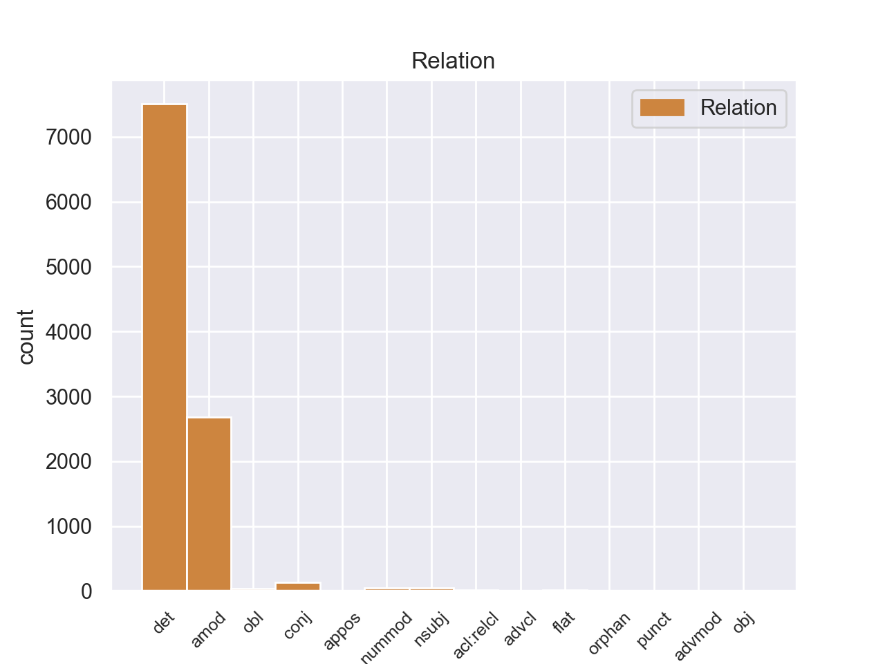
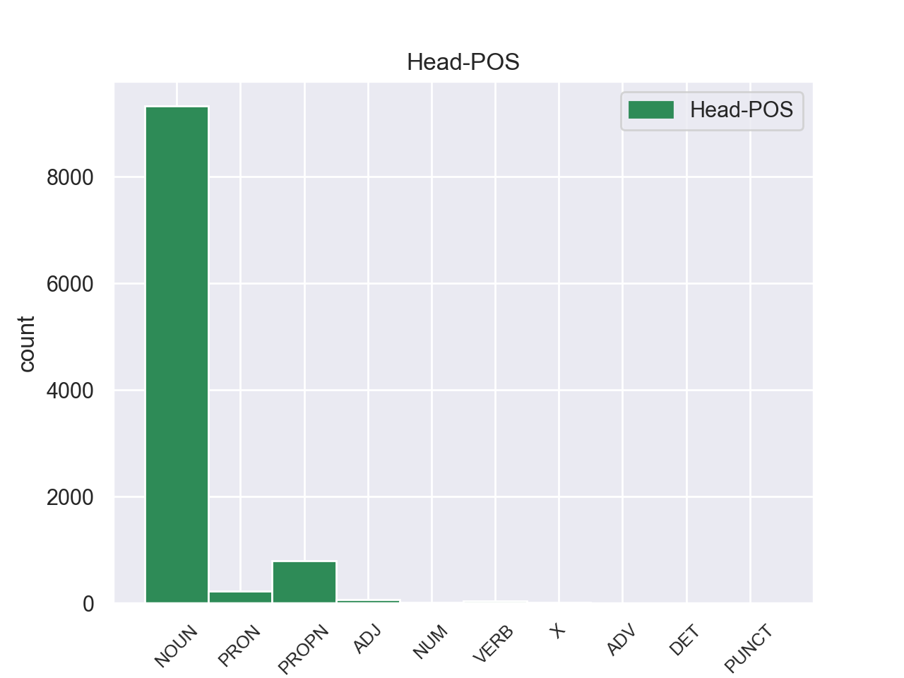
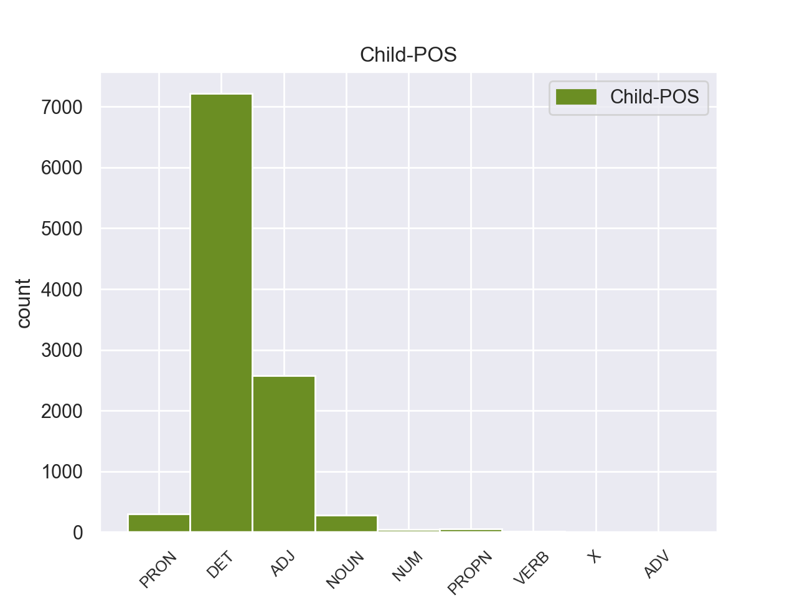

Distribution of features within this leaf



Agreement Rules sorted by frequency.
- When the dependent token is the determiner(det) of the head token, and the dependent token is DET.
1 Αυτό _ _ _ _ 0 _ _ _
2 μπορεί _ _ _ _ 0 _ _ _
3 να _ _ _ _ 0 _ _ _
4 μην _ _ _ _ 0 _ _ _
5 οδηγήσει _ _ _ _ 0 _ _ _
6 σ _ _ _ _ 0 _ _ _
7 τη _ _ _ _ 0 _ _ _
8 λήξη _ _ _ _ 0 _ _ _
9 του _ _ _ _ 0 _ _ _
10 εν _ _ _ _ 0 _ _ _
11 λόγω _ _ _ _ 0 _ _ _
12 ζητήματος _ _ _ _ 0 _ _ _
13 αλλά _ _ _ _ 0 _ _ _
14 , _ _ _ _ 0 _ _ _
15 σ _ _ _ _ 0 _ _ _
16 τη _ _ _ _ 0 _ _ _
17 μορφή _ _ _ _ 0 _ _ _
18 υπό _ _ _ _ 0 _ _ _
19 την _ _ _ _ 0 _ _ _
20 οποία _ _ _ _ 0 _ _ _
21 την _ _ _ _ 0 _ _ _
22 λάβαμε _ _ _ _ 0 _ _ _
23 , _ _ _ _ 0 _ _ _
24 αυτή _ _ _ _ 0 _ _ _
25 η _ _ _ _ 0 _ _ _
26 αίτηση _ _ _ _ 0 _ _ _
27 άρσης _ _ _ _ 0 _ _ _
28 της _ _ _ _ 0 _ _ _
29 ασυλίας _ _ _ _ 0 _ _ _
30 ήταν _ _ _ _ 0 _ _ _
31 , _ _ _ _ 0 _ _ _
32 κατά _ _ _ _ 0 _ _ _
33 την _ _ _ _ 0 _ _ _
34 άποψη _ _ _ _ 0 _ _ _
35 της _ _ _ _ 0 _ _ _
36 Επιτροπής _ _ _ _ 0 _ _ _
37 Νομικών _ _ _ _ 0 _ _ _
38 Θεμάτων _ _ _ _ 0 _ _ _
39 , _ _ _ _ 0 _ _ _
40 απαράδεκτη _ _ _ _ 0 _ _ _
41 , _ _ _ _ 0 _ _ _
42 άποψη _ _ _ _ 0 _ _ _
43 την _ _ _ _ 0 _ _ _
44 οποία _ _ _ _ 0 _ _ _
45 συνιστώ _ _ _ _ 0 _ _ _
46 σ _ _ _ _ 0 _ _ _
47 το ο DET _ Case=Acc|Gender=Neut|Number=Sing 48 det _ _
48 Σώμα Σώμα NOUN _ Case=Acc|Gender=Neut|Number=Sing 0 _ _ _
49 να _ _ _ _ 0 _ _ _
50 υιοθετήσει _ _ _ _ 0 _ _ _
51 . _ _ _ _ 0 _ _ _
1 Ευελπιστώ _ _ _ _ 0 _ _ _
2 ότι _ _ _ _ 0 _ _ _
3 η _ _ _ _ 0 _ _ _
4 απόφαση _ _ _ _ 0 _ _ _
5 αυτή _ _ _ _ 0 _ _ _
6 , _ _ _ _ 0 _ _ _
7 συμπεριλαμβανομένης _ _ _ _ 0 _ _ _
8 και _ _ _ _ 0 _ _ _
9 της _ _ _ _ 0 _ _ _
10 αιτιολογικής _ _ _ _ 0 _ _ _
11 έκθεσης _ _ _ _ 0 _ _ _
12 που _ _ _ _ 0 _ _ _
13 την _ _ _ _ 0 _ _ _
14 συνοδεύει _ _ _ _ 0 _ _ _
15 , _ _ _ _ 0 _ _ _
16 θα _ _ _ _ 0 _ _ _
17 διαβιβαστεί _ _ _ _ 0 _ _ _
18 σ _ _ _ _ 0 _ _ _
19 τις _ _ _ _ 0 _ _ _
20 γαλλικές γαλλικός ADJ _ Case=Acc|Gender=Fem|Number=Plur 21 amod _ _
21 αρχές αρχές NOUN _ Case=Acc|Gender=Fem|Number=Plur 0 _ _ _
22 , _ _ _ _ 0 _ _ _
23 εφόσον _ _ _ _ 0 _ _ _
24 υπερψηφιστεί _ _ _ _ 0 _ _ _
25 από _ _ _ _ 0 _ _ _
26 το _ _ _ _ 0 _ _ _
27 Κοινοβούλιο _ _ _ _ 0 _ _ _
28 . _ _ _ _ 0 _ _ _
1 Ευελπιστώ _ _ _ _ 0 _ _ _
2 ότι _ _ _ _ 0 _ _ _
3 η _ _ _ _ 0 _ _ _
4 απόφαση απόφαση NOUN _ Case=Nom|Gender=Fem|Number=Sing 0 _ _ _
5 αυτή αυτή PRON _ Case=Nom|Gender=Fem|Number=Sing|Person=3|PronType=Dem 4 det _ _
6 , _ _ _ _ 0 _ _ _
7 συμπεριλαμβανομένης _ _ _ _ 0 _ _ _
8 και _ _ _ _ 0 _ _ _
9 της _ _ _ _ 0 _ _ _
10 αιτιολογικής _ _ _ _ 0 _ _ _
11 έκθεσης _ _ _ _ 0 _ _ _
12 που _ _ _ _ 0 _ _ _
13 την _ _ _ _ 0 _ _ _
14 συνοδεύει _ _ _ _ 0 _ _ _
15 , _ _ _ _ 0 _ _ _
16 θα _ _ _ _ 0 _ _ _
17 διαβιβαστεί _ _ _ _ 0 _ _ _
18 σ _ _ _ _ 0 _ _ _
19 τις _ _ _ _ 0 _ _ _
20 γαλλικές _ _ _ _ 0 _ _ _
21 αρχές _ _ _ _ 0 _ _ _
22 , _ _ _ _ 0 _ _ _
23 εφόσον _ _ _ _ 0 _ _ _
24 υπερψηφιστεί _ _ _ _ 0 _ _ _
25 από _ _ _ _ 0 _ _ _
26 το _ _ _ _ 0 _ _ _
27 Κοινοβούλιο _ _ _ _ 0 _ _ _
28 . _ _ _ _ 0 _ _ _
1 Αφενός _ _ _ _ 0 _ _ _
2 , _ _ _ _ 0 _ _ _
3 σ _ _ _ _ 0 _ _ _
4 την _ _ _ _ 0 _ _ _
5 αίτηση _ _ _ _ 0 _ _ _
6 λήψης _ _ _ _ 0 _ _ _
7 μέτρων μέτρός NOUN _ Case=Gen|Gender=Fem|Number=Plur 9 amod _ _
8 δικαστικής _ _ _ _ 0 _ _ _
9 επιτήρησης επιτήρηση NOUN _ Case=Gen|Gender=Fem|Number=Sing 0 _ _ _
10 δεν _ _ _ _ 0 _ _ _
11 διευκρινίζονται _ _ _ _ 0 _ _ _
12 οι _ _ _ _ 0 _ _ _
13 χώρες _ _ _ _ 0 _ _ _
14 τις _ _ _ _ 0 _ _ _
15 οποίες _ _ _ _ 0 _ _ _
16 θα _ _ _ _ 0 _ _ _
17 απαγορευθεί _ _ _ _ 0 _ _ _
18 να _ _ _ _ 0 _ _ _
19 επισκεφθούν _ _ _ _ 0 _ _ _
20 οι _ _ _ _ 0 _ _ _
21 κατηγορούμενοι _ _ _ _ 0 _ _ _
22 και _ _ _ _ 0 _ _ _
23 αφετέρου _ _ _ _ 0 _ _ _
24 , _ _ _ _ 0 _ _ _
25 ύστερα _ _ _ _ 0 _ _ _
26 από _ _ _ _ 0 _ _ _
27 απόφαση _ _ _ _ 0 _ _ _
28 του _ _ _ _ 0 _ _ _
29 Ακυρωτικού _ _ _ _ 0 _ _ _
30 Δικαστηρίου _ _ _ _ 0 _ _ _
31 , _ _ _ _ 0 _ _ _
32 το _ _ _ _ 0 _ _ _
33 εύρος _ _ _ _ 0 _ _ _
34 της _ _ _ _ 0 _ _ _
35 διαδικασίας _ _ _ _ 0 _ _ _
36 μένει _ _ _ _ 0 _ _ _
37 να _ _ _ _ 0 _ _ _
38 προσδιοριστεί _ _ _ _ 0 _ _ _
39 με _ _ _ _ 0 _ _ _
40 απόφαση _ _ _ _ 0 _ _ _
41 του _ _ _ _ 0 _ _ _
42 Εφετείου _ _ _ _ 0 _ _ _
43 . _ _ _ _ 0 _ _ _
1 Οι _ _ _ _ 0 _ _ _
2 διαδικασίες _ _ _ _ 0 _ _ _
3 κινήθηκαν _ _ _ _ 0 _ _ _
4 τον _ _ _ _ 0 _ _ _
5 Ιούλιο_του_2000 _ _ _ _ 0 _ _ _
6 και _ _ _ _ 0 _ _ _
7 αφορούν _ _ _ _ 0 _ _ _
8 λαθρεμπόριο _ _ _ _ 0 _ _ _
9 όπλων _ _ _ _ 0 _ _ _
10 , _ _ _ _ 0 _ _ _
11 αθέμιτη _ _ _ _ 0 _ _ _
12 άσκηση _ _ _ _ 0 _ _ _
13 επιρροής _ _ _ _ 0 _ _ _
14 , _ _ _ _ 0 _ _ _
15 κατάχρηση _ _ _ _ 0 _ _ _
16 επιχειρηματικού _ _ _ _ 0 _ _ _
17 κεφαλαίου _ _ _ _ 0 _ _ _
18 , _ _ _ _ 0 _ _ _
19 κατάχρηση κατάχρηση NOUN _ Case=Acc|Gender=Fem|Number=Sing 0 _ _ _
20 εμπιστοσύνης _ _ _ _ 0 _ _ _
21 και _ _ _ _ 0 _ _ _
22 αποδοχή αποδοχή NOUN _ Case=Acc|Gender=Fem|Number=Sing 19 conj _ _
23 προϊόντων _ _ _ _ 0 _ _ _
24 εγκλήματος _ _ _ _ 0 _ _ _
25 . _ _ _ _ 0 _ _ _
1 πρόκειται _ _ _ _ 0 _ _ _
2 για _ _ _ _ 0 _ _ _
3 αυτό _ _ _ _ 0 _ _ _
4 το _ _ _ _ 0 _ _ _
5 οποίο _ _ _ _ 0 _ _ _
6 αποκαλύφθηκε _ _ _ _ 0 _ _ _
7 κατά _ _ _ _ 0 _ _ _
8 τη _ _ _ _ 0 _ _ _
9 διάρκεια _ _ _ _ 0 _ _ _
10 αυτής _ _ _ _ 0 _ _ _
11 της _ _ _ _ 0 _ _ _
12 διαδικασίας _ _ _ _ 0 _ _ _
13 , _ _ _ _ 0 _ _ _
14 ότι _ _ _ _ 0 _ _ _
15 ο _ _ _ _ 0 _ _ _
16 Εισαγγελέας _ _ _ _ 0 _ _ _
17 κάποια _ _ _ _ 0 _ _ _
18 στιγμή _ _ _ _ 0 _ _ _
19 ζήτησε _ _ _ _ 0 _ _ _
20 από _ _ _ _ 0 _ _ _
21 την _ _ _ _ 0 _ _ _
22 Πρόεδρο _ _ _ _ 0 _ _ _
23 του _ _ _ _ 0 _ _ _
24 Σώματος _ _ _ _ 0 _ _ _
25 , _ _ _ _ 0 _ _ _
26 την _ _ _ _ 0 _ _ _
27 προκάτοχό _ _ _ _ 0 _ _ _
28 σας _ _ _ _ 0 _ _ _
29 , _ _ _ _ 0 _ _ _
30 λεπτομέρειες _ _ _ _ 0 _ _ _
31 για _ _ _ _ 0 _ _ _
32 την _ _ _ _ 0 _ _ _
33 ψήφο _ _ _ _ 0 _ _ _
34 που _ _ _ _ 0 _ _ _
35 έχουν _ _ _ _ 0 _ _ _
36 δώσει _ _ _ _ 0 _ _ _
37 οι _ _ _ _ 0 _ _ _
38 δύο δύο NUM _ Case=Acc|Gender=Masc|Number=Plur 40 nummod _ _
39 συγκεκριμένοι _ _ _ _ 0 _ _ _
40 βουλευτές βουλευτές NOUN _ Case=Acc|Gender=Masc|Number=Plur 0 _ _ _
41 προκειμένου _ _ _ _ 0 _ _ _
42 να _ _ _ _ 0 _ _ _
43 διευκρινιστεί _ _ _ _ 0 _ _ _
44 περαιτέρω _ _ _ _ 0 _ _ _
45 η _ _ _ _ 0 _ _ _
46 πιθανότητα _ _ _ _ 0 _ _ _
47 να _ _ _ _ 0 _ _ _
48 είχαν _ _ _ _ 0 _ _ _
49 ασκήσει _ _ _ _ 0 _ _ _
50 αθέμιτη _ _ _ _ 0 _ _ _
51 επιρροή _ _ _ _ 0 _ _ _
52 . _ _ _ _ 0 _ _ _
1 Η _ _ _ _ 0 _ _ _
2 Μπενφίκα Μπενφίκα NOUN _ Case=Nom|Gender=Fem|Number=Sing 5 nsubj _ _
3 ήταν _ _ _ _ 0 _ _ _
4 πιο _ _ _ _ 0 _ _ _
5 επιθετική επιθετική ADJ _ Case=Nom|Gender=Fem|Number=Sing 0 _ _ _
6 και _ _ _ _ 0 _ _ _
7 καλύτερη _ _ _ _ 0 _ _ _
8 σ _ _ _ _ 0 _ _ _
9 το _ _ _ _ 0 _ _ _
10 πρώτο _ _ _ _ 0 _ _ _
11 ημίχρονο _ _ _ _ 0 _ _ _
12 , _ _ _ _ 0 _ _ _
13 με _ _ _ _ 0 _ _ _
14 αποτέλεσμα _ _ _ _ 0 _ _ _
15 να _ _ _ _ 0 _ _ _
16 ανοίξει _ _ _ _ 0 _ _ _
17 το _ _ _ _ 0 _ _ _
18 σκορ _ _ _ _ 0 _ _ _
19 σ _ _ _ _ 0 _ _ _
20 το _ _ _ _ 0 _ _ _
21 πρώτο _ _ _ _ 0 _ _ _
22 λεπτό _ _ _ _ 0 _ _ _
23 των _ _ _ _ 0 _ _ _
24 καθυστερήσεων _ _ _ _ 0 _ _ _
25 , _ _ _ _ 0 _ _ _
26 χάρη _ _ _ _ 0 _ _ _
27 σ _ _ _ _ 0 _ _ _
28 τον _ _ _ _ 0 _ _ _
29 Μάξι _ _ _ _ 0 _ _ _
30 Περέιρα _ _ _ _ 0 _ _ _
31 . _ _ _ _ 0 _ _ _
1 « _ _ _ _ 0 _ _ _
2 Δεκαεννέα _ _ _ _ 0 _ _ _
3 κρατούμενοι _ _ _ _ 0 _ _ _
4 , _ _ _ _ 0 _ _ _
5 μέλη _ _ _ _ 0 _ _ _
6 της _ _ _ _ 0 _ _ _
7 Αλ _ _ _ _ 0 _ _ _
8 Κάιντα Κάιντα PROPN _ Case=Gen|Gender=Fem|Number=Sing 0 _ _ _
9 και _ _ _ _ 0 _ _ _
10 της _ _ _ _ 0 _ _ _
11 Ανσάρ Ανσάρ PROPN _ Case=Gen|Gender=Fem|Number=Sing 8 conj _ _
12 αλ-Σούνα _ _ _ _ 0 _ _ _
13 , _ _ _ _ 0 _ _ _
14 απέδρασαν _ _ _ _ 0 _ _ _
15 σ _ _ _ _ 0 _ _ _
16 τις _ _ _ _ 0 _ _ _
17 03:30 _ _ _ _ 0 _ _ _
18 από _ _ _ _ 0 _ _ _
19 τη _ _ _ _ 0 _ _ _
20 φυλακή _ _ _ _ 0 _ _ _
21 , _ _ _ _ 0 _ _ _
22 αφού _ _ _ _ 0 _ _ _
23 αποκοίμισαν _ _ _ _ 0 _ _ _
24 τους _ _ _ _ 0 _ _ _
25 δεσμοφύλακες _ _ _ _ 0 _ _ _
26 και _ _ _ _ 0 _ _ _
27 τους _ _ _ _ 0 _ _ _
28 υπόλοιπους _ _ _ _ 0 _ _ _
29 κρατούμενους _ _ _ _ 0 _ _ _
30 . _ _ _ _ 0 _ _ _
1 « _ _ _ _ 0 _ _ _
2 Δεκαεννέα _ _ _ _ 0 _ _ _
3 κρατούμενοι _ _ _ _ 0 _ _ _
4 , _ _ _ _ 0 _ _ _
5 μέλη _ _ _ _ 0 _ _ _
6 της _ _ _ _ 0 _ _ _
7 Αλ Αλ PROPN _ Case=Gen|Gender=Fem|Number=Sing 8 amod _ _
8 Κάιντα Κάιντα PROPN _ Case=Gen|Gender=Fem|Number=Sing 0 _ _ _
9 και _ _ _ _ 0 _ _ _
10 της _ _ _ _ 0 _ _ _
11 Ανσάρ _ _ _ _ 0 _ _ _
12 αλ-Σούνα _ _ _ _ 0 _ _ _
13 , _ _ _ _ 0 _ _ _
14 απέδρασαν _ _ _ _ 0 _ _ _
15 σ _ _ _ _ 0 _ _ _
16 τις _ _ _ _ 0 _ _ _
17 03:30 _ _ _ _ 0 _ _ _
18 από _ _ _ _ 0 _ _ _
19 τη _ _ _ _ 0 _ _ _
20 φυλακή _ _ _ _ 0 _ _ _
21 , _ _ _ _ 0 _ _ _
22 αφού _ _ _ _ 0 _ _ _
23 αποκοίμισαν _ _ _ _ 0 _ _ _
24 τους _ _ _ _ 0 _ _ _
25 δεσμοφύλακες _ _ _ _ 0 _ _ _
26 και _ _ _ _ 0 _ _ _
27 τους _ _ _ _ 0 _ _ _
28 υπόλοιπους _ _ _ _ 0 _ _ _
29 κρατούμενους _ _ _ _ 0 _ _ _
30 . _ _ _ _ 0 _ _ _
1 Εκπρόσωπος _ _ _ _ 0 _ _ _
2 της _ _ _ _ 0 _ _ _
3 Αλ _ _ _ _ 0 _ _ _
4 Κάιντα _ _ _ _ 0 _ _ _
5 σ _ _ _ _ 0 _ _ _
6 τη _ _ _ _ 0 _ _ _
7 Μαγκρέμπ _ _ _ _ 0 _ _ _
8 ανέφερε _ _ _ _ 0 _ _ _
9 ότι _ _ _ _ 0 _ _ _
10 " _ _ _ _ 0 _ _ _
11 μεταξύ _ _ _ _ 0 _ _ _
12 των _ _ _ _ 0 _ _ _
13 ομήρων _ _ _ _ 0 _ _ _
14 είναι _ _ _ _ 0 _ _ _
15 και _ _ _ _ 0 _ _ _
16 επτά _ _ _ _ 0 _ _ _
17 Αμερικανοί _ _ _ _ 0 _ _ _
18 , _ _ _ _ 0 _ _ _
19 ενώ _ _ _ _ 0 _ _ _
20 οι _ _ _ _ 0 _ _ _
21 υπόλοιποι _ _ _ _ 0 _ _ _
22 είναι _ _ _ _ 0 _ _ _
23 Βρετανοί _ _ _ _ 0 _ _ _
24 , _ _ _ _ 0 _ _ _
25 Γάλλοι _ _ _ _ 0 _ _ _
26 , _ _ _ _ 0 _ _ _
27 Γιαπωνέζοι γιαπωνέζοι ADJ _ Case=Acc|Gender=Masc|Number=Plur 0 _ _ _
28 και _ _ _ _ 0 _ _ _
29 Νορβηγοί Νορβηγοί ADJ _ Case=Acc|Gender=Masc|Number=Plur 27 conj _ _
30 " _ _ _ _ 0 _ _ _
31 . _ _ _ _ 0 _ _ _
1 Οι _ _ _ _ 0 _ _ _
2 νέοι _ _ _ _ 0 _ _ _
3 Κινέζοι _ _ _ _ 0 _ _ _
4 άποικοι _ _ _ _ 0 _ _ _
5 έχουν _ _ _ _ 0 _ _ _
6 δημιουργήσει _ _ _ _ 0 _ _ _
7 μία _ _ _ _ 0 _ _ _
8 εναλλασσόμενη _ _ _ _ 0 _ _ _
9 κοινωνία _ _ _ _ 0 _ _ _
10 : _ _ _ _ 0 _ _ _
11 ένα _ _ _ _ 0 _ _ _
12 κινεζικό _ _ _ _ 0 _ _ _
13 απαρτχάιντ _ _ _ _ 0 _ _ _
14 το _ _ _ _ 0 _ _ _
15 οποίο _ _ _ _ 0 _ _ _
16 , _ _ _ _ 0 _ _ _
17 μέσω _ _ _ _ 0 _ _ _
18 της _ _ _ _ 0 _ _ _
19 άρνησης _ _ _ _ 0 _ _ _
20 ίσων _ _ _ _ 0 _ _ _
21 κοινωνικών _ _ _ _ 0 _ _ _
22 και _ _ _ _ 0 _ _ _
23 οικονομικών _ _ _ _ 0 _ _ _
24 δικαιωμάτων _ _ _ _ 0 _ _ _
25 σ _ _ _ _ 0 _ _ _
26 την _ _ _ _ 0 _ _ _
27 ίδια ίδιος PRON _ Case=Acc|Gender=Fem|Number=Sing 30 amod _ _
28 μας _ _ _ _ 0 _ _ _
29 τη _ _ _ _ 0 _ _ _
30 γη γη NOUN _ Case=Acc|Gender=Fem|Number=Sing 0 _ _ _
31 , _ _ _ _ 0 _ _ _
32 προσπαθεί _ _ _ _ 0 _ _ _
33 να _ _ _ _ 0 _ _ _
34 μας _ _ _ _ 0 _ _ _
35 καταβάλει _ _ _ _ 0 _ _ _
36 και _ _ _ _ 0 _ _ _
37 να _ _ _ _ 0 _ _ _
38 μας _ _ _ _ 0 _ _ _
39 απορροφήσει _ _ _ _ 0 _ _ _
40 . _ _ _ _ 0 _ _ _
1 Υπάρχει _ _ _ _ 0 _ _ _
2 μια _ _ _ _ 0 _ _ _
3 άλλη άλλη ADJ _ Case=Acc|Gender=Fem|Number=Sing 4 det _ _
4 πλευρά πλευρά NOUN _ Case=Nom|Gender=Fem|Number=Sing 0 _ _ _
5 της _ _ _ _ 0 _ _ _
6 υπόθεσης _ _ _ _ 0 _ _ _
7 , _ _ _ _ 0 _ _ _
8 η _ _ _ _ 0 _ _ _
9 οποία _ _ _ _ 0 _ _ _
10 , _ _ _ _ 0 _ _ _
11 δυστυχώς _ _ _ _ 0 _ _ _
12 , _ _ _ _ 0 _ _ _
13 γεννά _ _ _ _ 0 _ _ _
14 την _ _ _ _ 0 _ _ _
15 υποψία _ _ _ _ 0 _ _ _
16 ότι _ _ _ _ 0 _ _ _
17 η _ _ _ _ 0 _ _ _
18 πρόνοια _ _ _ _ 0 _ _ _
19 σχετικά _ _ _ _ 0 _ _ _
20 με _ _ _ _ 0 _ _ _
21 τις _ _ _ _ 0 _ _ _
22 προϋποθέσεις _ _ _ _ 0 _ _ _
23 ελεύθερης _ _ _ _ 0 _ _ _
24 διεξαγωγής _ _ _ _ 0 _ _ _
25 του _ _ _ _ 0 _ _ _
26 κοινοβουλευτικού _ _ _ _ 0 _ _ _
27 έργου _ _ _ _ 0 _ _ _
28 δεν _ _ _ _ 0 _ _ _
29 απασχόλησε _ _ _ _ 0 _ _ _
30 επαρκώς _ _ _ _ 0 _ _ _
31 την _ _ _ _ 0 _ _ _
32 εισαγγελική _ _ _ _ 0 _ _ _
33 αρχή _ _ _ _ 0 _ _ _
34 : _ _ _ _ 0 _ _ _
1 Παρόμοιο _ _ _ _ 0 _ _ _
2 καθεστώς _ _ _ _ 0 _ _ _
3 επιδιώκουν _ _ _ _ 0 _ _ _
4 και _ _ _ _ 0 _ _ _
5 οι _ _ _ _ 0 _ _ _
6 πόλεις _ _ _ _ 0 _ _ _
7 σ _ _ _ _ 0 _ _ _
8 τα _ _ _ _ 0 _ _ _
9 ανατολικά _ _ _ _ 0 _ _ _
10 της _ _ _ _ 0 _ _ _
11 Λιβύης _ _ _ _ 0 _ _ _
12 , _ _ _ _ 0 _ _ _
13 οι _ _ _ _ 0 _ _ _
14 οποίες οποίες PRON _ Case=Acc|Gender=Fem|Number=Sing|Person=3|PronType=Rel 16 nsubj _ _
15 είναι _ _ _ _ 0 _ _ _
16 πλούσιες πλούσιες VERB _ Case=Nom|Gender=Fem|Number=Plur 0 _ _ _
17 σε _ _ _ _ 0 _ _ _
18 κοιτάσματα _ _ _ _ 0 _ _ _
19 πετρελαίου _ _ _ _ 0 _ _ _
20 . _ _ _ _ 0 _ _ _
1 Κύριε _ _ _ _ 0 _ _ _
2 Πρόεδρε _ _ _ _ 0 _ _ _
3 , _ _ _ _ 0 _ _ _
4 σας _ _ _ _ 0 _ _ _
5 είμαι _ _ _ _ 0 _ _ _
6 εξαιρετικά _ _ _ _ 0 _ _ _
7 ευγνώμων _ _ _ _ 0 _ _ _
8 για _ _ _ _ 0 _ _ _
9 το _ _ _ _ 0 _ _ _
10 ότι _ _ _ _ 0 _ _ _
11 ταχθήκατε _ _ _ _ 0 _ _ _
12 υπέρ _ _ _ _ 0 _ _ _
13 της _ _ _ _ 0 _ _ _
14 πρότασης _ _ _ _ 0 _ _ _
15 να _ _ _ _ 0 _ _ _
16 προσκαλέσουμε _ _ _ _ 0 _ _ _
17 σ _ _ _ _ 0 _ _ _
18 το _ _ _ _ 0 _ _ _
19 Ευρωπαϊκό _ _ _ _ 0 _ _ _
20 Κοινοβούλιο _ _ _ _ 0 _ _ _
21 , _ _ _ _ 0 _ _ _
22 σ _ _ _ _ 0 _ _ _
23 τις _ _ _ _ 0 _ _ _
24 Ομάδες _ _ _ _ 0 _ _ _
25 μας _ _ _ _ 0 _ _ _
26 , _ _ _ _ 0 _ _ _
27 παρατηρητές παρατηρητές NOUN _ Case=Nom|Gender=Fem|Number=Plur 0 _ _ _
28 από _ _ _ _ 0 _ _ _
29 τις _ _ _ _ 0 _ _ _
30 υποψήφιες υποψήφιες NOUN _ Case=Acc|Gender=Fem|Number=Sing 27 obl _ _
31 για _ _ _ _ 0 _ _ _
32 ένταξη _ _ _ _ 0 _ _ _
33 χώρες _ _ _ _ 0 _ _ _
34 μετά _ _ _ _ 0 _ _ _
35 από _ _ _ _ 0 _ _ _
36 την _ _ _ _ 0 _ _ _
37 υπογραφή _ _ _ _ 0 _ _ _
38 των _ _ _ _ 0 _ _ _
39 συνθηκών _ _ _ _ 0 _ _ _
40 . _ _ _ _ 0 _ _ _
1 Ο _ _ _ _ 0 _ _ _
2 Μπαράκ Μπαράκ X _ Case=Nom|Gender=Masc|Number=Sing 0 _ _ _
3 Ομπάμα Ομπάμα X _ Case=Nom|Gender=Masc|Number=Plur 2 flat _ _
4 ανέφερε _ _ _ _ 0 _ _ _
5 ότι _ _ _ _ 0 _ _ _
6 « _ _ _ _ 0 _ _ _
7 ήδη _ _ _ _ 0 _ _ _
8 υπάρχουν _ _ _ _ 0 _ _ _
9 πολλές _ _ _ _ 0 _ _ _
10 αναφορές _ _ _ _ 0 _ _ _
11 για _ _ _ _ 0 _ _ _
12 πόλεμο _ _ _ _ 0 _ _ _
13 με _ _ _ _ 0 _ _ _
14 το _ _ _ _ 0 _ _ _
15 Ιράν _ _ _ _ 0 _ _ _
16 » _ _ _ _ 0 _ _ _
17 και _ _ _ _ 0 _ _ _
18 επεσήμανε _ _ _ _ 0 _ _ _
19 τέτοιες _ _ _ _ 0 _ _ _
20 συζητήσεις _ _ _ _ 0 _ _ _
21 « _ _ _ _ 0 _ _ _
22 είναι _ _ _ _ 0 _ _ _
23 προς _ _ _ _ 0 _ _ _
24 όφελος _ _ _ _ 0 _ _ _
25 της _ _ _ _ 0 _ _ _
26 Τεχεράνης _ _ _ _ 0 _ _ _
27 γιατί _ _ _ _ 0 _ _ _
28 αυξάνουν _ _ _ _ 0 _ _ _
29 τις _ _ _ _ 0 _ _ _
30 τιμές _ _ _ _ 0 _ _ _
31 του _ _ _ _ 0 _ _ _
32 πετρελαίου _ _ _ _ 0 _ _ _
33 , _ _ _ _ 0 _ _ _
34 σ _ _ _ _ 0 _ _ _
35 το _ _ _ _ 0 _ _ _
36 οποίο _ _ _ _ 0 _ _ _
37 βασίζεται _ _ _ _ 0 _ _ _
38 η _ _ _ _ 0 _ _ _
39 Ιρανική _ _ _ _ 0 _ _ _
40 Κυβέρνηση _ _ _ _ 0 _ _ _
41 για _ _ _ _ 0 _ _ _
42 την _ _ _ _ 0 _ _ _
43 χρηματοδότηση _ _ _ _ 0 _ _ _
44 του _ _ _ _ 0 _ _ _
45 πυρηνικού _ _ _ _ 0 _ _ _
46 της _ _ _ _ 0 _ _ _
47 προγράμματος _ _ _ _ 0 _ _ _
48 » _ _ _ _ 0 _ _ _
49 . _ _ _ _ 0 _ _ _
1 πρόκειται _ _ _ _ 0 _ _ _
2 για _ _ _ _ 0 _ _ _
3 αυτό _ _ _ _ 0 _ _ _
4 το _ _ _ _ 0 _ _ _
5 οποίο _ _ _ _ 0 _ _ _
6 αποκαλύφθηκε _ _ _ _ 0 _ _ _
7 κατά _ _ _ _ 0 _ _ _
8 τη _ _ _ _ 0 _ _ _
9 διάρκεια _ _ _ _ 0 _ _ _
10 αυτής _ _ _ _ 0 _ _ _
11 της _ _ _ _ 0 _ _ _
12 διαδικασίας _ _ _ _ 0 _ _ _
13 , _ _ _ _ 0 _ _ _
14 ότι _ _ _ _ 0 _ _ _
15 ο _ _ _ _ 0 _ _ _
16 Εισαγγελέας _ _ _ _ 0 _ _ _
17 κάποια _ _ _ _ 0 _ _ _
18 στιγμή _ _ _ _ 0 _ _ _
19 ζήτησε _ _ _ _ 0 _ _ _
20 από _ _ _ _ 0 _ _ _
21 την _ _ _ _ 0 _ _ _
22 Πρόεδρο _ _ _ _ 0 _ _ _
23 του _ _ _ _ 0 _ _ _
24 Σώματος _ _ _ _ 0 _ _ _
25 , _ _ _ _ 0 _ _ _
26 την _ _ _ _ 0 _ _ _
27 προκάτοχό _ _ _ _ 0 _ _ _
28 σας _ _ _ _ 0 _ _ _
29 , _ _ _ _ 0 _ _ _
30 λεπτομέρειες _ _ _ _ 0 _ _ _
31 για _ _ _ _ 0 _ _ _
32 την _ _ _ _ 0 _ _ _
33 ψήφο _ _ _ _ 0 _ _ _
34 που _ _ _ _ 0 _ _ _
35 έχουν _ _ _ _ 0 _ _ _
36 δώσει _ _ _ _ 0 _ _ _
37 οι _ _ _ _ 0 _ _ _
38 δύο _ _ _ _ 0 _ _ _
39 συγκεκριμένοι _ _ _ _ 0 _ _ _
40 βουλευτές _ _ _ _ 0 _ _ _
41 προκειμένου _ _ _ _ 0 _ _ _
42 να _ _ _ _ 0 _ _ _
43 διευκρινιστεί _ _ _ _ 0 _ _ _
44 περαιτέρω _ _ _ _ 0 _ _ _
45 η _ _ _ _ 0 _ _ _
46 πιθανότητα πιθανότητα NOUN _ Case=Acc|Gender=Fem|Number=Sing 0 _ _ _
47 να _ _ _ _ 0 _ _ _
48 είχαν _ _ _ _ 0 _ _ _
49 ασκήσει ασκήσει VERB _ Case=Acc|Gender=Fem|Number=Sing 46 acl:relcl _ _
50 αθέμιτη _ _ _ _ 0 _ _ _
51 επιρροή _ _ _ _ 0 _ _ _
52 . _ _ _ _ 0 _ _ _
1 « _ _ _ _ 0 _ _ _
2 Δεκαεννέα δεκαεννέα ADJ _ Case=Nom|Gender=Masc|Number=Plur 3 nummod _ _
3 κρατούμενοι κρατούμενοι NOUN _ Case=Nom|Gender=Masc|Number=Plur 0 _ _ _
4 , _ _ _ _ 0 _ _ _
5 μέλη _ _ _ _ 0 _ _ _
6 της _ _ _ _ 0 _ _ _
7 Αλ _ _ _ _ 0 _ _ _
8 Κάιντα _ _ _ _ 0 _ _ _
9 και _ _ _ _ 0 _ _ _
10 της _ _ _ _ 0 _ _ _
11 Ανσάρ _ _ _ _ 0 _ _ _
12 αλ-Σούνα _ _ _ _ 0 _ _ _
13 , _ _ _ _ 0 _ _ _
14 απέδρασαν _ _ _ _ 0 _ _ _
15 σ _ _ _ _ 0 _ _ _
16 τις _ _ _ _ 0 _ _ _
17 03:30 _ _ _ _ 0 _ _ _
18 από _ _ _ _ 0 _ _ _
19 τη _ _ _ _ 0 _ _ _
20 φυλακή _ _ _ _ 0 _ _ _
21 , _ _ _ _ 0 _ _ _
22 αφού _ _ _ _ 0 _ _ _
23 αποκοίμισαν _ _ _ _ 0 _ _ _
24 τους _ _ _ _ 0 _ _ _
25 δεσμοφύλακες _ _ _ _ 0 _ _ _
26 και _ _ _ _ 0 _ _ _
27 τους _ _ _ _ 0 _ _ _
28 υπόλοιπους _ _ _ _ 0 _ _ _
29 κρατούμενους _ _ _ _ 0 _ _ _
30 . _ _ _ _ 0 _ _ _
1 Τον _ _ _ _ 0 _ _ _
2 Φεβρουάριο_του_2001 _ _ _ _ 0 _ _ _
3 η _ _ _ _ 0 _ _ _
4 πρώτη _ _ _ _ 0 _ _ _
5 επίσκεψη _ _ _ _ 0 _ _ _
6 των _ _ _ _ 0 _ _ _
7 υπουργών _ _ _ _ 0 _ _ _
8 της _ _ _ _ 0 _ _ _
9 τρόικας _ _ _ _ 0 _ _ _
10 της _ _ _ _ 0 _ _ _
11 Ένωσης _ _ _ _ 0 _ _ _
12 σ _ _ _ _ 0 _ _ _
13 την _ _ _ _ 0 _ _ _
14 περιφέρεια _ _ _ _ 0 _ _ _
15 εξέπεμψε _ _ _ _ 0 _ _ _
16 αυτό _ _ _ _ 0 _ _ _
17 το _ _ _ _ 0 _ _ _
18 μήνυμα _ _ _ _ 0 _ _ _
19 , _ _ _ _ 0 _ _ _
20 το _ _ _ _ 0 _ _ _
21 οποίο _ _ _ _ 0 _ _ _
22 επιβεβαιώθηκε _ _ _ _ 0 _ _ _
23 αργότερα _ _ _ _ 0 _ _ _
24 σ _ _ _ _ 0 _ _ _
25 τα _ _ _ _ 0 _ _ _
26 συμπεράσματα _ _ _ _ 0 _ _ _
27 του _ _ _ _ 0 _ _ _
28 Συμβουλίου _ _ _ _ 0 _ _ _
29 Γενικών _ _ _ _ 0 _ _ _
30 Υποθέσεων υποθέσεω NOUN _ Case=Gen|Gender=Fem|Number=Sing 0 _ _ _
31 της _ _ _ _ 0 _ _ _
32 26ης_Φεβρουαρίου 26ης_φεβρουαρίου NUM _ Case=Gen|Gender=Fem|Number=Sing 30 amod _ _
33 . _ _ _ _ 0 _ _ _
1 Πρέπει _ _ _ _ 0 _ _ _
2 να _ _ _ _ 0 _ _ _
3 επισημανθεί _ _ _ _ 0 _ _ _
4 ότι _ _ _ _ 0 _ _ _
5 ο _ _ _ _ 0 _ _ _
6 Εισαγγελέας _ _ _ _ 0 _ _ _
7 Πλημμελειοδικών _ _ _ _ 0 _ _ _
8 υποστήριξε _ _ _ _ 0 _ _ _
9 σθεναρά _ _ _ _ 0 _ _ _
10 την _ _ _ _ 0 _ _ _
11 αίτηση _ _ _ _ 0 _ _ _
12 επιβολής _ _ _ _ 0 _ _ _
13 μέτρων _ _ _ _ 0 _ _ _
14 δικαστικής _ _ _ _ 0 _ _ _
15 επιτήρησης _ _ _ _ 0 _ _ _
16 που _ _ _ _ 0 _ _ _
17 υπέβαλαν _ _ _ _ 0 _ _ _
18 οι _ _ _ _ 0 _ _ _
19 ανακριτές _ _ _ _ 0 _ _ _
20 , _ _ _ _ 0 _ _ _
21 υπογραμμίζοντας _ _ _ _ 0 _ _ _
22 τη _ _ _ _ 0 _ _ _
23 σοβαρότητα _ _ _ _ 0 _ _ _
24 και _ _ _ _ 0 _ _ _
25 τη _ _ _ _ 0 _ _ _
26 φύση _ _ _ _ 0 _ _ _
27 της _ _ _ _ 0 _ _ _
28 υπόθεσης _ _ _ _ 0 _ _ _
29 και _ _ _ _ 0 _ _ _
30 χαρακτηρίζοντας _ _ _ _ 0 _ _ _
31 μάλιστα _ _ _ _ 0 _ _ _
32 την _ _ _ _ 0 _ _ _
33 αίτηση αίτηση NOUN _ Case=Acc|Gender=Fem|Number=Sing 0 _ _ _
34 αυτή _ _ _ _ 0 _ _ _
35 ως _ _ _ _ 0 _ _ _
36 απαραίτητη απαραίτητη ADJ _ Case=Acc|Gender=Fem|Number=Sing 33 acl:relcl _ _
37 επί _ _ _ _ 0 _ _ _
38 της _ _ _ _ 0 _ _ _
39 αρχής _ _ _ _ 0 _ _ _
40 . _ _ _ _ 0 _ _ _
1 Περισσότεροι _ _ _ _ 0 _ _ _
2 από _ _ _ _ 0 _ _ _
3 15.000 _ _ _ _ 0 _ _ _
4 τόνοι _ _ _ _ 0 _ _ _
5 πατάτας _ _ _ _ 0 _ _ _
6 διατέθηκαν _ _ _ _ 0 _ _ _
7 σ _ _ _ _ 0 _ _ _
8 την _ _ _ _ 0 _ _ _
9 αγορά _ _ _ _ 0 _ _ _
10 μόνο _ _ _ _ 0 _ _ _
11 από _ _ _ _ 0 _ _ _
12 το _ _ _ _ 0 _ _ _
13 λεκανοπέδιο _ _ _ _ 0 _ _ _
14 του _ _ _ _ 0 _ _ _
15 Νευροκοπίου _ _ _ _ 0 _ _ _
16 , _ _ _ _ 0 _ _ _
17 σύμφωνα _ _ _ _ 0 _ _ _
18 με _ _ _ _ 0 _ _ _
19 υπολογισμούς _ _ _ _ 0 _ _ _
20 από _ _ _ _ 0 _ _ _
21 τη _ _ _ _ 0 _ _ _
22 στιγμή _ _ _ _ 0 _ _ _
23 που _ _ _ _ 0 _ _ _
24 ξεκίνησε _ _ _ _ 0 _ _ _
25 το _ _ _ _ 0 _ _ _
26 « « NOUN _ Case=Acc|Gender=Neut|Number=Sing 27 punct _ _
27 κίνημα κίνημα NOUN _ Case=Acc|Gender=Neut|Number=Sing 0 _ _ _
28 της _ _ _ _ 0 _ _ _
29 πατάτας _ _ _ _ 0 _ _ _
30 » _ _ _ _ 0 _ _ _
31 - _ _ _ _ 0 _ _ _
32 πριν _ _ _ _ 0 _ _ _
33 από _ _ _ _ 0 _ _ _
34 έναν _ _ _ _ 0 _ _ _
35 μήνα _ _ _ _ 0 _ _ _
36 περίπου _ _ _ _ 0 _ _ _
37 - _ _ _ _ 0 _ _ _
38 μέχρι _ _ _ _ 0 _ _ _
39 σήμερα _ _ _ _ 0 _ _ _
40 . _ _ _ _ 0 _ _ _
1 Η _ _ _ _ 0 _ _ _
2 σημερινή _ _ _ _ 0 _ _ _
3 μέρα μέρα NOUN _ Case=Nom|Gender=Fem|Number=Sing 0 _ _ _
4 σ _ _ _ _ 0 _ _ _
5 το _ _ _ _ 0 _ _ _
6 Βέλγιο _ _ _ _ 0 _ _ _
7 είναι _ _ _ _ 0 _ _ _
8 ημέρα _ _ _ _ 0 _ _ _
9 πένθους _ _ _ _ 0 _ _ _
10 για _ _ _ _ 0 _ _ _
11 τα _ _ _ _ 0 _ _ _
12 θύματα _ _ _ _ 0 _ _ _
13 ενός _ _ _ _ 0 _ _ _
14 αυτοκινητιστικού _ _ _ _ 0 _ _ _
15 δυστυχήματος _ _ _ _ 0 _ _ _
16 σε _ _ _ _ 0 _ _ _
17 τούνελ _ _ _ _ 0 _ _ _
18 της _ _ _ _ 0 _ _ _
19 Ελβετίας _ _ _ _ 0 _ _ _
20 , _ _ _ _ 0 _ _ _
21 του _ _ _ _ 0 _ _ _
22 οποίου _ _ _ _ 0 _ _ _
23 θύματα _ _ _ _ 0 _ _ _
24 ήταν _ _ _ _ 0 _ _ _
25 μαθητές μαθητές NOUN _ Case=Nom|Gender=Fem|Number=Plur 3 acl:relcl _ _
26 δύο _ _ _ _ 0 _ _ _
27 βελγικών _ _ _ _ 0 _ _ _
28 σχολείων _ _ _ _ 0 _ _ _
29 . _ _ _ _ 0 _ _ _
1 Υπάρχει _ _ _ _ 0 _ _ _
2 ένας _ _ _ _ 0 _ _ _
3 εκλεγμένος εκλέγω VERB VERB Aspect=Perf|Case=Nom|Gender=Masc|Number=Sing|VerbForm=Part|Voice=Pass 4 amod _ _
4 Πρόεδρος πρόεδρος NOUN NOUN Case=Nom|Gender=Masc|Number=Sing 0 _ _ _
5 αυτού _ _ _ _ 0 _ _ _
6 του _ _ _ _ 0 _ _ _
7 παλαιστινιακού _ _ _ _ 0 _ _ _
8 κράτους _ _ _ _ 0 _ _ _
9 και _ _ _ _ 0 _ _ _
10 δεν _ _ _ _ 0 _ _ _
11 μπορούμε _ _ _ _ 0 _ _ _
12 να _ _ _ _ 0 _ _ _
13 τον _ _ _ _ 0 _ _ _
14 αγνοήσουμε _ _ _ _ 0 _ _ _
15 ούτε _ _ _ _ 0 _ _ _
16 εμείς _ _ _ _ 0 _ _ _
17 ούτε _ _ _ _ 0 _ _ _
18 ο _ _ _ _ 0 _ _ _
19 κ. _ _ _ _ 0 _ _ _
20 Sharon _ _ _ _ 0 _ _ _
21 . _ _ _ _ 0 _ _ _
1 Ο _ _ _ _ 0 _ _ _
2 Χάουμε _ _ _ _ 0 _ _ _
3 Μάτας _ _ _ _ 0 _ _ _
4 είχε _ _ _ _ 0 _ _ _
5 λάβει _ _ _ _ 0 _ _ _
6 παρανόμως _ _ _ _ 0 _ _ _
7 500.000 _ _ _ _ 0 _ _ _
8 ευρώ ευρώ NOUN NOUN Case=Acc|Gender=Neut|Number=Sing 0 _ _ _
9 ( _ _ _ _ 0 _ _ _
10 δημόσια _ _ _ _ 0 _ _ _
11 χρήματα χρήμα NOUN NOUN Case=Acc|Gender=Neut|Number=Plur 8 appos _ SpaceAfter=No
12 ) _ _ _ _ 0 _ _ _
13 , _ _ _ _ 0 _ _ _
14 για _ _ _ _ 0 _ _ _
15 να _ _ _ _ 0 _ _ _
16 πληρώσει _ _ _ _ 0 _ _ _
17 δημοσιογράφο _ _ _ _ 0 _ _ _
18 που _ _ _ _ 0 _ _ _
19 έγραφε _ _ _ _ 0 _ _ _
20 τις _ _ _ _ 0 _ _ _
21 ομιλίες _ _ _ _ 0 _ _ _
22 του _ _ _ _ 0 _ _ _
23 . _ _ _ _ 0 _ _ _
1 Ο _ _ _ _ 0 _ _ _
2 Τζων _ _ _ _ 0 _ _ _
3 Κέρι _ _ _ _ 0 _ _ _
4 ορκίστηκε _ _ _ _ 0 _ _ _
5 την _ _ _ _ 0 _ _ _
6 Παρασκευή _ _ _ _ 0 _ _ _
7 αντικαθιστώντας _ _ _ _ 0 _ _ _
8 τη _ _ _ _ 0 _ _ _
9 Χίλαρι Χίλαρι NOUN _ Case=Acc|Gender=Fem|Number=Sing 0 _ _ _
10 Κλίντον Κλίντον PROPN _ Case=Gen|Gender=Fem|Number=Sing 9 flat _ _
11 σ _ _ _ _ 0 _ _ _
12 το _ _ _ _ 0 _ _ _
13 πηδάλιο _ _ _ _ 0 _ _ _
14 του _ _ _ _ 0 _ _ _
15 State _ _ _ _ 0 _ _ _
16 Department _ _ _ _ 0 _ _ _
17 . _ _ _ _ 0 _ _ _
1 Θα _ _ _ _ 0 _ _ _
2 ήταν _ _ _ _ 0 _ _ _
3 οπωσδήποτε οπωσδήποτε ADJ _ Case=Nom|Gender=Masc|Number=Plur 4 advmod _ _
4 βλακώδες βλακώδες VERB _ Case=Nom|Gender=Masc|Number=Plur 0 _ _ _
5 εάν _ _ _ _ 0 _ _ _
6 επιχειρούσαμε _ _ _ _ 0 _ _ _
7 κάτι _ _ _ _ 0 _ _ _
8 τέτοιο _ _ _ _ 0 _ _ _
9 , _ _ _ _ 0 _ _ _
10 διότι _ _ _ _ 0 _ _ _
11 η _ _ _ _ 0 _ _ _
12 OLAF _ _ _ _ 0 _ _ _
13 δεν _ _ _ _ 0 _ _ _
14 αποτελεί _ _ _ _ 0 _ _ _
15 μόνο _ _ _ _ 0 _ _ _
16 βασικό _ _ _ _ 0 _ _ _
17 μέσο _ _ _ _ 0 _ _ _
18 προκειμένου _ _ _ _ 0 _ _ _
19 να _ _ _ _ 0 _ _ _
20 εντατικοποιηθεί _ _ _ _ 0 _ _ _
21 η _ _ _ _ 0 _ _ _
22 συνεργασία _ _ _ _ 0 _ _ _
23 με _ _ _ _ 0 _ _ _
24 τα _ _ _ _ 0 _ _ _
25 κράτη _ _ _ _ 0 _ _ _
26 μέλη _ _ _ _ 0 _ _ _
27 για _ _ _ _ 0 _ _ _
28 την _ _ _ _ 0 _ _ _
29 καταπολέμηση _ _ _ _ 0 _ _ _
30 της _ _ _ _ 0 _ _ _
31 απάτης _ _ _ _ 0 _ _ _
32 αλλά _ _ _ _ 0 _ _ _
33 είναι _ _ _ _ 0 _ _ _
34 φυσικά _ _ _ _ 0 _ _ _
35 και _ _ _ _ 0 _ _ _
36 ένα _ _ _ _ 0 _ _ _
37 καλό _ _ _ _ 0 _ _ _
38 και _ _ _ _ 0 _ _ _
39 αντικειμενικό _ _ _ _ 0 _ _ _
40 μέσο _ _ _ _ 0 _ _ _
41 για _ _ _ _ 0 _ _ _
42 τις _ _ _ _ 0 _ _ _
43 έρευνες _ _ _ _ 0 _ _ _
44 σ _ _ _ _ 0 _ _ _
45 το _ _ _ _ 0 _ _ _
46 εσωτερικό _ _ _ _ 0 _ _ _
47 της _ _ _ _ 0 _ _ _
48 Επιτροπής _ _ _ _ 0 _ _ _
49 . _ _ _ _ 0 _ _ _
1 Συνειδητοποιώ _ _ _ _ 0 _ _ _
2 με _ _ _ _ 0 _ _ _
3 ανακούφιση _ _ _ _ 0 _ _ _
4 ότι _ _ _ _ 0 _ _ _
5 δεν _ _ _ _ 0 _ _ _
6 είμαι _ _ _ _ 0 _ _ _
7 ο _ _ _ _ 0 _ _ _
8 αρμόδιος _ _ _ _ 0 _ _ _
9 Επίτροπος _ _ _ _ 0 _ _ _
10 ούτε _ _ _ _ 0 _ _ _
11 για _ _ _ _ 0 _ _ _
12 τη _ _ _ _ 0 _ _ _
13 φορολογία _ _ _ _ 0 _ _ _
14 ούτε _ _ _ _ 0 _ _ _
15 για _ _ _ _ 0 _ _ _
16 τη _ _ _ _ 0 _ _ _
17 νομισματική _ _ _ _ 0 _ _ _
18 ένωση _ _ _ _ 0 _ _ _
19 , _ _ _ _ 0 _ _ _
20 αλλά _ _ _ _ 0 _ _ _
21 απλά _ _ _ _ 0 _ _ _
22 ο _ _ _ _ 0 _ _ _
23 Επίτροπος _ _ _ _ 0 _ _ _
24 για _ _ _ _ 0 _ _ _
25 την _ _ _ _ 0 _ _ _
26 ταπεινή _ _ _ _ 0 _ _ _
27 πολιτική _ _ _ _ 0 _ _ _
28 ανταγωνισμού _ _ _ _ 0 _ _ _
29 η _ _ _ _ 0 _ _ _
30 οποία _ _ _ _ 0 _ _ _
31 , _ _ _ _ 0 _ _ _
32 παρόλα _ _ _ _ 0 _ _ _
33 ταύτα _ _ _ _ 0 _ _ _
34 , _ _ _ _ 0 _ _ _
35 έχει _ _ _ _ 0 _ _ _
36 να _ _ _ _ 0 _ _ _
37 διαδραματίσει _ _ _ _ 0 _ _ _
38 ένα _ _ _ _ 0 _ _ _
39 ρόλο _ _ _ _ 0 _ _ _
40 και _ _ _ _ 0 _ _ _
41 προσπαθεί _ _ _ _ 0 _ _ _
42 να _ _ _ _ 0 _ _ _
43 τον _ _ _ _ 0 _ _ _
44 διαδραματίσει _ _ _ _ 0 _ _ _
45 δραστήρια _ _ _ _ 0 _ _ _
46 - _ _ _ _ 0 _ _ _
47 με _ _ _ _ 0 _ _ _
48 την _ _ _ _ 0 _ _ _
49 υποστήριξη _ _ _ _ 0 _ _ _
50 του _ _ _ _ 0 _ _ _
51 Κοινοβουλίου _ _ _ _ 0 _ _ _
52 , _ _ _ _ 0 _ _ _
53 η _ _ _ _ 0 _ _ _
54 οποία _ _ _ _ 0 _ _ _
55 είναι _ _ _ _ 0 _ _ _
56 εμφανής _ _ _ _ 0 _ _ _
57 για _ _ _ _ 0 _ _ _
58 μία _ _ _ _ 0 _ _ _
59 ακόμη ακόμη ADV _ Case=Acc|Gender=Fem|Number=Sing 60 amod _ _
60 φορά φορά NOUN _ Case=Acc|Gender=Fem|Number=Sing 0 _ _ _
61 σήμερα _ _ _ _ 0 _ _ _
62 . _ _ _ _ 0 _ _ _
1 Είναι _ _ _ _ 0 _ _ _
2 εξαιρετικής _ _ _ _ 0 _ _ _
3 σημασίας _ _ _ _ 0 _ _ _
4 το _ _ _ _ 0 _ _ _
5 γεγονός _ _ _ _ 0 _ _ _
6 ότι _ _ _ _ 0 _ _ _
7 αναγνωρίστηκε _ _ _ _ 0 _ _ _
8 , _ _ _ _ 0 _ _ _
9 αρχικά _ _ _ _ 0 _ _ _
10 από _ _ _ _ 0 _ _ _
11 την _ _ _ _ 0 _ _ _
12 Επιτροπή _ _ _ _ 0 _ _ _
13 Μετανάστευσης _ _ _ _ 0 _ _ _
14 και _ _ _ _ 0 _ _ _
15 εν _ _ _ _ 0 _ _ _
16 συνεχεία _ _ _ _ 0 _ _ _
17 από _ _ _ _ 0 _ _ _
18 την _ _ _ _ 0 _ _ _
19 ολομέλεια _ _ _ _ 0 _ _ _
20 της _ _ _ _ 0 _ _ _
21 κοινοβουλευτικής _ _ _ _ 0 _ _ _
22 συνέλευσης _ _ _ _ 0 _ _ _
23 , _ _ _ _ 0 _ _ _
24 ότι _ _ _ _ 0 _ _ _
25 " _ _ _ _ 0 _ _ _
26 το _ _ _ _ 0 _ _ _
27 πρόβλημα _ _ _ _ 0 _ _ _
28 δεν _ _ _ _ 0 _ _ _
29 είναι _ _ _ _ 0 _ _ _
30 ελληνικό ελληνικός ADJ ADJ Case=Nom|Gender=Neut|Number=Sing 0 _ _ _
31 , _ _ _ _ 0 _ _ _
32 αλλά _ _ _ _ 0 _ _ _
33 ευρωπαϊκό _ _ _ _ 0 _ _ _
34 , _ _ _ _ 0 _ _ _
35 καθώς _ _ _ _ 0 _ _ _
36 τα _ _ _ _ 0 _ _ _
37 σύνορα _ _ _ _ 0 _ _ _
38 της _ _ _ _ 0 _ _ _
39 Ελλάδας _ _ _ _ 0 _ _ _
40 είναι _ _ _ _ 0 _ _ _
41 και _ _ _ _ 0 _ _ _
42 σύνορα σύνορο NOUN NOUN Case=Nom|Gender=Neut|Number=Plur 30 advcl _ _
43 της _ _ _ _ 0 _ _ _
44 Ευρώπης _ _ _ _ 0 _ _ _
45 " _ _ _ _ 0 _ _ _
46 , _ _ _ _ 0 _ _ _
47 και _ _ _ _ 0 _ _ _
48 ότι _ _ _ _ 0 _ _ _
49 " _ _ _ _ 0 _ _ _
50 η _ _ _ _ 0 _ _ _
51 Ελλάδα _ _ _ _ 0 _ _ _
52 δεν _ _ _ _ 0 _ _ _
53 μπορεί _ _ _ _ 0 _ _ _
54 μόνη _ _ _ _ 0 _ _ _
55 της _ _ _ _ 0 _ _ _
56 να _ _ _ _ 0 _ _ _
57 αντιμετωπίσει _ _ _ _ 0 _ _ _
58 το _ _ _ _ 0 _ _ _
59 θέμα _ _ _ _ 0 _ _ _
60 της _ _ _ _ 0 _ _ _
61 μετανάστευσης _ _ _ _ 0 _ _ _
62 και _ _ _ _ 0 _ _ _
63 να _ _ _ _ 0 _ _ _
64 την _ _ _ _ 0 _ _ _
65 καταπολεμήσει _ _ _ _ 0 _ _ _
66 χωρίς _ _ _ _ 0 _ _ _
67 μεγαλύτερη _ _ _ _ 0 _ _ _
68 αλληλεγγύη _ _ _ _ 0 _ _ _
69 και _ _ _ _ 0 _ _ _
70 οικονομική _ _ _ _ 0 _ _ _
71 βοήθεια _ _ _ _ 0 _ _ _
72 από _ _ _ _ 0 _ _ _
73 την _ _ _ _ 0 _ _ _
74 Ευρωπαϊκή _ _ _ _ 0 _ _ _
75 Ένωση _ _ _ _ 0 _ _ _
76 και _ _ _ _ 0 _ _ _
77 τις _ _ _ _ 0 _ _ _
78 άλλες _ _ _ _ 0 _ _ _
79 χώρες _ _ _ _ 0 _ _ _
80 - _ _ _ _ 0 _ _ _
81 μέλη _ _ _ _ 0 _ _ _
82 του _ _ _ _ 0 _ _ _
83 Συμβουλίου _ _ _ _ 0 _ _ _
84 της _ _ _ _ 0 _ _ _
85 Ευρώπης _ _ _ _ 0 _ _ _
86 " _ _ _ _ 0 _ _ _
87 . _ _ _ _ 0 _ _ _
1 Η _ _ _ _ 0 _ _ _
2 Χίλαρι Χίλαρι PROPN PROPN Case=Nom|Gender=Fem|Number=Sing 5 nsubj _ _
3 Κλίντον _ _ _ _ 0 _ _ _
4 είναι _ _ _ _ 0 _ _ _
5 άρρωστη άρρωστος ADJ ADJ Case=Nom|Gender=Fem|Number=Sing 0 _ _ _
6 εδώ _ _ _ _ 0 _ _ _
7 και _ _ _ _ 0 _ _ _
8 εβδομάδες _ _ _ _ 0 _ _ _
9 με _ _ _ _ 0 _ _ _
10 αποτέλεσμα _ _ _ _ 0 _ _ _
11 να _ _ _ _ 0 _ _ _
12 αναγκαστεί _ _ _ _ 0 _ _ _
13 να _ _ _ _ 0 _ _ _
14 ακυρώσει _ _ _ _ 0 _ _ _
15 δημόσιες _ _ _ _ 0 _ _ _
16 εμφανίσεις _ _ _ _ 0 _ _ _
17 και _ _ _ _ 0 _ _ _
18 προγραμματισμένα _ _ _ _ 0 _ _ _
19 ταξίδια _ _ _ _ 0 _ _ _
20 της _ _ _ _ 0 _ _ _
21 . _ _ _ _ 0 _ _ _
1 Τεράστιος τεράστιος ADJ ADJ Case=Nom|Gender=Masc|Number=Sing 0 _ _ _
2 είναι _ _ _ _ 0 _ _ _
3 και _ _ _ _ 0 _ _ _
4 ο _ _ _ _ 0 _ _ _
5 αριθμός _ _ _ _ 0 _ _ _
6 των _ _ _ _ 0 _ _ _
7 ανθρώπων _ _ _ _ 0 _ _ _
8 που _ _ _ _ 0 _ _ _
9 έχουν _ _ _ _ 0 _ _ _
10 μείνει _ _ _ _ 0 _ _ _
11 άστεγοι _ _ _ _ 0 _ _ _
12 , _ _ _ _ 0 _ _ _
13 καθώς _ _ _ _ 0 _ _ _
14 ανέρχονται _ _ _ _ 0 _ _ _
15 περίπου _ _ _ _ 0 _ _ _
16 σ _ _ _ _ 0 _ _ _
17 τους _ _ _ _ 0 _ _ _
18 50.000 _ _ _ _ 0 _ _ _
19 , _ _ _ _ 0 _ _ _
20 ενώ _ _ _ _ 0 _ _ _
21 πολλοί πολύς ADJ ADJ Case=Nom|Gender=Masc|Number=Plur 1 advcl _ _
22 είναι _ _ _ _ 0 _ _ _
23 εκείνοι _ _ _ _ 0 _ _ _
24 που _ _ _ _ 0 _ _ _
25 πέρασαν _ _ _ _ 0 _ _ _
26 τη _ _ _ _ 0 _ _ _
27 νύχτα _ _ _ _ 0 _ _ _
28 σε _ _ _ _ 0 _ _ _
29 στρατώνες _ _ _ _ 0 _ _ _
30 και _ _ _ _ 0 _ _ _
31 σχολεία _ _ _ _ 0 _ _ _
32 . _ _ _ _ 0 _ _ _
1 Για _ _ _ _ 0 _ _ _
2 το _ _ _ _ 0 _ _ _
3 ζήτημα _ _ _ _ 0 _ _ _
4 αυτό _ _ _ _ 0 _ _ _
5 έχει _ _ _ _ 0 _ _ _
6 ξεκινήσει _ _ _ _ 0 _ _ _
7 και _ _ _ _ 0 _ _ _
8 μία _ _ _ _ 0 _ _ _
9 νομική _ _ _ _ 0 _ _ _
10 εξέταση _ _ _ _ 0 _ _ _
11 και _ _ _ _ 0 _ _ _
12 ο _ _ _ _ 0 _ _ _
13 Γενικός _ _ _ _ 0 _ _ _
14 Εισαγγελέας _ _ _ _ 0 _ _ _
15 αποφάνθηκε _ _ _ _ 0 _ _ _
16 με _ _ _ _ 0 _ _ _
17 σαφήνεια _ _ _ _ 0 _ _ _
18 ότι _ _ _ _ 0 _ _ _
19 είναι _ _ _ _ 0 _ _ _
20 σωστή σωστός ADJ ADJ Case=Nom|Gender=Fem|Number=Sing 0 _ _ _
21 η _ _ _ _ 0 _ _ _
22 δική _ _ _ _ 0 _ _ _
23 μου _ _ _ _ 0 _ _ _
24 άποψη _ _ _ _ 0 _ _ _
25 , _ _ _ _ 0 _ _ _
26 και _ _ _ _ 0 _ _ _
27 άποψη _ _ _ _ 0 _ _ _
28 της _ _ _ _ 0 _ _ _
29 Επιτροπής _ _ _ _ 0 _ _ _
30 Περιβάλλοντος _ _ _ _ 0 _ _ _
31 , _ _ _ _ 0 _ _ _
32 και _ _ _ _ 0 _ _ _
33 όχι _ _ _ _ 0 _ _ _
34 αυτή αυτός PRON PRON Case=Nom|Gender=Fem|Number=Sing|Person=3|PronType=Dem 20 conj _ _
35 της _ _ _ _ 0 _ _ _
36 Επιτροπής _ _ _ _ 0 _ _ _
37 . _ _ _ _ 0 _ _ _
1 Ο _ _ _ _ 0 _ _ _
2 νέος _ _ _ _ 0 _ _ _
3 Υπουργός υπουργός NOUN NOUN Case=Nom|Gender=Masc|Number=Sing 0 _ _ _
4 Εξωτερικών _ _ _ _ 0 _ _ _
5 των _ _ _ _ 0 _ _ _
6 ΗΠΑ _ _ _ _ 0 _ _ _
7 , _ _ _ _ 0 _ _ _
8 Τζων Τζων PROPN PROPN Case=Nom|Gender=Masc|Number=Sing 3 appos _ _
9 Κέρι _ _ _ _ 0 _ _ _
10 , _ _ _ _ 0 _ _ _
11 επικοινώνησε _ _ _ _ 0 _ _ _
12 για _ _ _ _ 0 _ _ _
13 πρώτη _ _ _ _ 0 _ _ _
14 φορά _ _ _ _ 0 _ _ _
15 τηλεφωνικά _ _ _ _ 0 _ _ _
16 με _ _ _ _ 0 _ _ _
17 ηγέτες _ _ _ _ 0 _ _ _
18 και _ _ _ _ 0 _ _ _
19 ανώτερους _ _ _ _ 0 _ _ _
20 αξιωματούχους _ _ _ _ 0 _ _ _
21 ξένων _ _ _ _ 0 _ _ _
22 χωρών _ _ _ _ 0 _ _ _
23 . _ _ _ _ 0 _ _ _
1 Ενθαρρυντικά ενθαρρυντικός ADJ ADJ Case=Nom|Gender=Neut|Number=Plur 0 _ _ _
2 τα _ _ _ _ 0 _ _ _
3 νέα νέος ADJ ADJ Case=Nom|Gender=Neut|Number=Plur 1 nsubj _ _
4 για _ _ _ _ 0 _ _ _
5 τη _ _ _ _ 0 _ _ _
6 γρίπη _ _ _ _ 0 _ _ _
7 των _ _ _ _ 0 _ _ _
8 πτηνών _ _ _ _ 0 _ _ _
1 Ο _ _ _ _ 0 _ _ _
2 Ρικ Ρικ X _ Case=Nom|Gender=Masc|Number=Sing 5 nsubj _ _
3 Σαντόρουμ _ _ _ _ 0 _ _ _
4 , _ _ _ _ 0 _ _ _
5 υποψήφιος υποψήφιος NOUN _ Case=Nom|Gender=Masc|Number=Plur 0 _ _ _
6 για _ _ _ _ 0 _ _ _
7 το _ _ _ _ 0 _ _ _
8 προεδρικό _ _ _ _ 0 _ _ _
9 χρίσμα _ _ _ _ 0 _ _ _
10 των _ _ _ _ 0 _ _ _
11 Ρεπουμπλικανών _ _ _ _ 0 _ _ _
12 , _ _ _ _ 0 _ _ _
13 πέτυχε _ _ _ _ 0 _ _ _
14 μεγάλη _ _ _ _ 0 _ _ _
15 νίκη _ _ _ _ 0 _ _ _
16 σ _ _ _ _ 0 _ _ _
17 την _ _ _ _ 0 _ _ _
18 πολιτεία _ _ _ _ 0 _ _ _
19 του _ _ _ _ 0 _ _ _
20 Κάνσας _ _ _ _ 0 _ _ _
21 . _ _ _ _ 0 _ _ _
1 Από _ _ _ _ 0 _ _ _
2 τους _ _ _ _ 0 _ _ _
3 σίφωνες _ _ _ _ 0 _ _ _
4 επλήγησαν _ _ _ _ 0 _ _ _
5 οι _ _ _ _ 0 _ _ _
6 πολιτείες _ _ _ _ 0 _ _ _
7 Ιλλινόις _ _ _ _ 0 _ _ _
8 , _ _ _ _ 0 _ _ _
9 Ιντιάνα _ _ _ _ 0 _ _ _
10 , _ _ _ _ 0 _ _ _
11 Κεντάκυ _ _ _ _ 0 _ _ _
12 , _ _ _ _ 0 _ _ _
13 Τενεσί _ _ _ _ 0 _ _ _
14 , _ _ _ _ 0 _ _ _
15 Οχάιο _ _ _ _ 0 _ _ _
16 , _ _ _ _ 0 _ _ _
17 Τζόρτζια _ _ _ _ 0 _ _ _
18 , _ _ _ _ 0 _ _ _
19 Αλαμπάμα _ _ _ _ 0 _ _ _
20 , _ _ _ _ 0 _ _ _
21 Μισισίπι _ _ _ _ 0 _ _ _
22 και _ _ _ _ 0 _ _ _
23 βόρεια _ _ _ _ 0 _ _ _
24 και _ _ _ _ 0 _ _ _
25 νότια ο DET _ Case=Acc|Gender=Fem|Number=Sing 26 amod _ _
26 Καρολίνα Καρολίνα PROPN _ Case=Acc|Gender=Fem|Number=Sing 0 _ _ _
27 . _ _ _ _ 0 _ _ _
1 Η _ _ _ _ 0 _ _ _
2 εκπρόσωπος _ _ _ _ 0 _ _ _
3 του _ _ _ _ 0 _ _ _
4 διεθνούς _ _ _ _ 0 _ _ _
5 οργανισμού _ _ _ _ 0 _ _ _
6 πρόσθεσε _ _ _ _ 0 _ _ _
7 ότι _ _ _ _ 0 _ _ _
8 " _ _ _ _ 0 _ _ _
9 η _ _ _ _ 0 _ _ _
10 άσχημη _ _ _ _ 0 _ _ _
11 κατάσταση _ _ _ _ 0 _ _ _
12 σ _ _ _ _ 0 _ _ _
13 την _ _ _ _ 0 _ _ _
14 Ελλάδα _ _ _ _ 0 _ _ _
15 είναι _ _ _ _ 0 _ _ _
16 η _ _ _ _ 0 _ _ _
17 χειρότερη χειρότερη ADJ _ Case=Acc|Gender=Fem|Number=Sing 0 _ _ _
18 σ _ _ _ _ 0 _ _ _
19 την _ _ _ _ 0 _ _ _
20 Ευρώπη Ευρώπη PROPN _ Case=Acc|Gender=Fem|Number=Sing 17 obl _ _
21 , _ _ _ _ 0 _ _ _
22 εξαιτίας _ _ _ _ 0 _ _ _
23 της _ _ _ _ 0 _ _ _
24 οικονομικής _ _ _ _ 0 _ _ _
25 κρίσης _ _ _ _ 0 _ _ _
26 " _ _ _ _ 0 _ _ _
27 . _ _ _ _ 0 _ _ _
1 Η _ _ _ _ 0 _ _ _
2 ιδιωτική _ _ _ _ 0 _ _ _
3 αντιπροσωπεία _ _ _ _ 0 _ _ _
4 , _ _ _ _ 0 _ _ _
5 σ _ _ _ _ 0 _ _ _
6 την _ _ _ _ 0 _ _ _
7 οποία _ _ _ _ 0 _ _ _
8 συμμετέχουν _ _ _ _ 0 _ _ _
9 ο _ _ _ _ 0 _ _ _
10 Πρόεδρος πρόεδρος NOUN _ Case=Nom|Gender=Masc|Number=Sing 0 _ _ _
11 της _ _ _ _ 0 _ _ _
12 Google _ _ _ _ 0 _ _ _
13 , _ _ _ _ 0 _ _ _
14 Έρικ _ _ _ _ 0 _ _ _
15 Σμιτ Σμιτ NOUN _ Case=Nom|Gender=Masc|Number=Sing 10 flat _ _
16 , _ _ _ _ 0 _ _ _
17 και _ _ _ _ 0 _ _ _
18 ο _ _ _ _ 0 _ _ _
19 πρώην _ _ _ _ 0 _ _ _
20 Κυβερνήτης _ _ _ _ 0 _ _ _
21 του _ _ _ _ 0 _ _ _
22 Νέου _ _ _ _ 0 _ _ _
23 Μεξικού _ _ _ _ 0 _ _ _
24 , _ _ _ _ 0 _ _ _
25 Μπιλ _ _ _ _ 0 _ _ _
26 Ρίτσαρντσον _ _ _ _ 0 _ _ _
27 , _ _ _ _ 0 _ _ _
28 μετείχε _ _ _ _ 0 _ _ _
29 την _ _ _ _ 0 _ _ _
30 Τρίτη _ _ _ _ 0 _ _ _
31 σε _ _ _ _ 0 _ _ _
32 ξενάγηση _ _ _ _ 0 _ _ _
33 σ _ _ _ _ 0 _ _ _
34 το _ _ _ _ 0 _ _ _
35 εργαστήρι _ _ _ _ 0 _ _ _
36 διαδικτύου _ _ _ _ 0 _ _ _
37 του _ _ _ _ 0 _ _ _
38 πανεπιστημίου _ _ _ _ 0 _ _ _
39 Κιμ _ _ _ _ 0 _ _ _
40 Ιλ _ _ _ _ 0 _ _ _
41 Σουνγκ _ _ _ _ 0 _ _ _
42 σ _ _ _ _ 0 _ _ _
43 την _ _ _ _ 0 _ _ _
44 Πιονγκγιάνγκ _ _ _ _ 0 _ _ _
45 . _ _ _ _ 0 _ _ _
1 Η _ _ _ _ 0 _ _ _
2 σημερινή _ _ _ _ 0 _ _ _
3 μέρα _ _ _ _ 0 _ _ _
4 σ _ _ _ _ 0 _ _ _
5 το _ _ _ _ 0 _ _ _
6 Βέλγιο _ _ _ _ 0 _ _ _
7 είναι _ _ _ _ 0 _ _ _
8 ημέρα _ _ _ _ 0 _ _ _
9 πένθους _ _ _ _ 0 _ _ _
10 για _ _ _ _ 0 _ _ _
11 τα _ _ _ _ 0 _ _ _
12 θύματα _ _ _ _ 0 _ _ _
13 ενός _ _ _ _ 0 _ _ _
14 αυτοκινητιστικού _ _ _ _ 0 _ _ _
15 δυστυχήματος _ _ _ _ 0 _ _ _
16 σε _ _ _ _ 0 _ _ _
17 τούνελ _ _ _ _ 0 _ _ _
18 της _ _ _ _ 0 _ _ _
19 Ελβετίας _ _ _ _ 0 _ _ _
20 , _ _ _ _ 0 _ _ _
21 του _ _ _ _ 0 _ _ _
22 οποίου οποίου PRON _ Case=Acc|Gender=Fem|Number=Sing|Person=3|PronType=Rel 25 obl _ _
23 θύματα _ _ _ _ 0 _ _ _
24 ήταν _ _ _ _ 0 _ _ _
25 μαθητές μαθητές NOUN _ Case=Nom|Gender=Fem|Number=Plur 0 _ _ _
26 δύο _ _ _ _ 0 _ _ _
27 βελγικών _ _ _ _ 0 _ _ _
28 σχολείων _ _ _ _ 0 _ _ _
29 . _ _ _ _ 0 _ _ _
1 Σύμφωνα _ _ _ _ 0 _ _ _
2 με _ _ _ _ 0 _ _ _
3 το _ _ _ _ 0 _ _ _
4 άρθρο _ _ _ _ 0 _ _ _
5 10 _ _ _ _ 0 _ _ _
6 του _ _ _ _ 0 _ _ _
7 Πρωτοκόλλου _ _ _ _ 0 _ _ _
8 του _ _ _ _ 0 _ _ _
9 1965 _ _ _ _ 0 _ _ _
10 , _ _ _ _ 0 _ _ _
11 δεν _ _ _ _ 0 _ _ _
12 υφίσταται _ _ _ _ 0 _ _ _
13 σχετική _ _ _ _ 0 _ _ _
14 ασυλία _ _ _ _ 0 _ _ _
15 για _ _ _ _ 0 _ _ _
16 βουλευτή _ _ _ _ 0 _ _ _
17 της _ _ _ _ 0 _ _ _
18 Γαλλικής _ _ _ _ 0 _ _ _
19 Εθνοσυνέλευσης _ _ _ _ 0 _ _ _
20 ή _ _ _ _ 0 _ _ _
21 , _ _ _ _ 0 _ _ _
22 κατά _ _ _ _ 0 _ _ _
23 συνέπεια _ _ _ _ 0 _ _ _
24 , _ _ _ _ 0 _ _ _
25 για _ _ _ _ 0 _ _ _
26 γάλλο _ _ _ _ 0 _ _ _
27 βουλευτή _ _ _ _ 0 _ _ _
28 του _ _ _ _ 0 _ _ _
29 Ευρωπαϊκού _ _ _ _ 0 _ _ _
30 Κοινοβουλίου _ _ _ _ 0 _ _ _
31 σε _ _ _ _ 0 _ _ _
32 περίπτωση περίπτωση NOUN _ Case=Acc|Gender=Fem|Number=Sing 33 det _ _
33 δίωξης δίωξης NOUN _ Case=Acc|Gender=Fem|Number=Sing 0 _ _ _
34 για _ _ _ _ 0 _ _ _
35 κατηγορίες _ _ _ _ 0 _ _ _
36 αυτού _ _ _ _ 0 _ _ _
37 του _ _ _ _ 0 _ _ _
38 είδους _ _ _ _ 0 _ _ _
39 . _ _ _ _ 0 _ _ _
1 πρόκειται _ _ _ _ 0 _ _ _
2 για _ _ _ _ 0 _ _ _
3 αυτό _ _ _ _ 0 _ _ _
4 το _ _ _ _ 0 _ _ _
5 οποίο _ _ _ _ 0 _ _ _
6 αποκαλύφθηκε _ _ _ _ 0 _ _ _
7 κατά _ _ _ _ 0 _ _ _
8 τη _ _ _ _ 0 _ _ _
9 διάρκεια _ _ _ _ 0 _ _ _
10 αυτής _ _ _ _ 0 _ _ _
11 της _ _ _ _ 0 _ _ _
12 διαδικασίας _ _ _ _ 0 _ _ _
13 , _ _ _ _ 0 _ _ _
14 ότι _ _ _ _ 0 _ _ _
15 ο _ _ _ _ 0 _ _ _
16 Εισαγγελέας _ _ _ _ 0 _ _ _
17 κάποια _ _ _ _ 0 _ _ _
18 στιγμή _ _ _ _ 0 _ _ _
19 ζήτησε _ _ _ _ 0 _ _ _
20 από _ _ _ _ 0 _ _ _
21 την _ _ _ _ 0 _ _ _
22 Πρόεδρο _ _ _ _ 0 _ _ _
23 του _ _ _ _ 0 _ _ _
24 Σώματος _ _ _ _ 0 _ _ _
25 , _ _ _ _ 0 _ _ _
26 την _ _ _ _ 0 _ _ _
27 προκάτοχό _ _ _ _ 0 _ _ _
28 σας _ _ _ _ 0 _ _ _
29 , _ _ _ _ 0 _ _ _
30 λεπτομέρειες _ _ _ _ 0 _ _ _
31 για _ _ _ _ 0 _ _ _
32 την _ _ _ _ 0 _ _ _
33 ψήφο _ _ _ _ 0 _ _ _
34 που _ _ _ _ 0 _ _ _
35 έχουν _ _ _ _ 0 _ _ _
36 δώσει _ _ _ _ 0 _ _ _
37 οι _ _ _ _ 0 _ _ _
38 δύο _ _ _ _ 0 _ _ _
39 συγκεκριμένοι _ _ _ _ 0 _ _ _
40 βουλευτές _ _ _ _ 0 _ _ _
41 προκειμένου _ _ _ _ 0 _ _ _
42 να _ _ _ _ 0 _ _ _
43 διευκρινιστεί _ _ _ _ 0 _ _ _
44 περαιτέρω _ _ _ _ 0 _ _ _
45 η _ _ _ _ 0 _ _ _
46 πιθανότητα _ _ _ _ 0 _ _ _
47 να _ _ _ _ 0 _ _ _
48 είχαν _ _ _ _ 0 _ _ _
49 ασκήσει ασκήσει VERB _ Case=Acc|Gender=Fem|Number=Sing 0 _ _ _
50 αθέμιτη _ _ _ _ 0 _ _ _
51 επιρροή επιρροή NOUN _ Case=Acc|Gender=Fem|Number=Sing 49 obj _ _
52 . _ _ _ _ 0 _ _ _
Disagree Examples:
1 Ωστόσο _ _ _ _ 0 _ _ _
2 , _ _ _ _ 0 _ _ _
3 πολλοί _ _ _ _ 0 _ _ _
4 από _ _ _ _ 0 _ _ _
5 εμάς _ _ _ _ 0 _ _ _
6 σε _ _ _ _ 0 _ _ _
7 αυτό _ _ _ _ 0 _ _ _
8 το _ _ _ _ 0 _ _ _
9 Κοινοβούλιο _ _ _ _ 0 _ _ _
10 μεριμνούμε _ _ _ _ 0 _ _ _
11 ώστε _ _ _ _ 0 _ _ _
12 η _ _ _ _ 0 _ _ _
13 αρχή _ _ _ _ 0 _ _ _
14 της _ _ _ _ 0 _ _ _
15 αμοιβαίας _ _ _ _ 0 _ _ _
16 αναγνώρισης _ _ _ _ 0 _ _ _
17 να _ _ _ _ 0 _ _ _
18 μην _ _ _ _ 0 _ _ _
19 υπονομεύσει _ _ _ _ 0 _ _ _
20 τα _ _ _ _ 0 _ _ _
21 ατομικά _ _ _ _ 0 _ _ _
22 δικαιώματα _ _ _ _ 0 _ _ _
23 των _ _ _ _ 0 _ _ _
24 πολιτών _ _ _ _ 0 _ _ _
25 , _ _ _ _ 0 _ _ _
26 και _ _ _ _ 0 _ _ _
27 σε _ _ _ _ 0 _ _ _
28 αυτό _ _ _ _ 0 _ _ _
29 το _ _ _ _ 0 _ _ _
30 πεδίο πεδίο NOUN NOUN Case=Acc|Gender=Neut|Number=Sing 34 obl _ _
31 γενικά _ _ _ _ 0 _ _ _
32 είναι _ _ _ _ 0 _ _ _
33 πρωταρχικής _ _ _ _ 0 _ _ _
34 σημασίας σημασία NOUN NOUN Case=Gen|Gender=Fem|Number=Sing 0 _ _ _
35 να _ _ _ _ 0 _ _ _
36 τηρούνται _ _ _ _ 0 _ _ _
37 τα _ _ _ _ 0 _ _ _
38 νομικά _ _ _ _ 0 _ _ _
39 εχέγγυα _ _ _ _ 0 _ _ _
40 που _ _ _ _ 0 _ _ _
41 περιλαμβάνονται _ _ _ _ 0 _ _ _
42 , _ _ _ _ 0 _ _ _
43 όχι _ _ _ _ 0 _ _ _
44 μόνο _ _ _ _ 0 _ _ _
45 σ _ _ _ _ 0 _ _ _
46 την _ _ _ _ 0 _ _ _
47 Ευρωπαϊκή _ _ _ _ 0 _ _ _
48 Σύμβαση _ _ _ _ 0 _ _ _
49 για _ _ _ _ 0 _ _ _
50 την _ _ _ _ 0 _ _ _
51 προάσπιση _ _ _ _ 0 _ _ _
52 των _ _ _ _ 0 _ _ _
53 δικαιωμάτων _ _ _ _ 0 _ _ _
54 του _ _ _ _ 0 _ _ _
55 ανθρώπου _ _ _ _ 0 _ _ _
56 , _ _ _ _ 0 _ _ _
57 αλλά _ _ _ _ 0 _ _ _
58 επίσης _ _ _ _ 0 _ _ _
59 , _ _ _ _ 0 _ _ _
60 θα _ _ _ _ 0 _ _ _
61 έλεγα _ _ _ _ 0 _ _ _
62 σ _ _ _ _ 0 _ _ _
63 τον _ _ _ _ 0 _ _ _
64 κ. _ _ _ _ 0 _ _ _
65 Blockland _ _ _ _ 0 _ _ _
66 , _ _ _ _ 0 _ _ _
67 σ _ _ _ _ 0 _ _ _
68 τον _ _ _ _ 0 _ _ _
69 Χάρτη _ _ _ _ 0 _ _ _
70 των _ _ _ _ 0 _ _ _
71 Θεμελιωδών _ _ _ _ 0 _ _ _
72 Δικαιωμάτων _ _ _ _ 0 _ _ _
73 της _ _ _ _ 0 _ _ _
74 ΕΕ _ _ _ _ 0 _ _ _
1 Ωστόσο _ _ _ _ 0 _ _ _
2 , _ _ _ _ 0 _ _ _
3 πολλοί _ _ _ _ 0 _ _ _
4 από _ _ _ _ 0 _ _ _
5 εμάς _ _ _ _ 0 _ _ _
6 σε _ _ _ _ 0 _ _ _
7 αυτό _ _ _ _ 0 _ _ _
8 το _ _ _ _ 0 _ _ _
9 Κοινοβούλιο _ _ _ _ 0 _ _ _
10 μεριμνούμε _ _ _ _ 0 _ _ _
11 ώστε _ _ _ _ 0 _ _ _
12 η _ _ _ _ 0 _ _ _
13 αρχή _ _ _ _ 0 _ _ _
14 της _ _ _ _ 0 _ _ _
15 αμοιβαίας _ _ _ _ 0 _ _ _
16 αναγνώρισης _ _ _ _ 0 _ _ _
17 να _ _ _ _ 0 _ _ _
18 μην _ _ _ _ 0 _ _ _
19 υπονομεύσει _ _ _ _ 0 _ _ _
20 τα _ _ _ _ 0 _ _ _
21 ατομικά _ _ _ _ 0 _ _ _
22 δικαιώματα _ _ _ _ 0 _ _ _
23 των _ _ _ _ 0 _ _ _
24 πολιτών _ _ _ _ 0 _ _ _
25 , _ _ _ _ 0 _ _ _
26 και _ _ _ _ 0 _ _ _
27 σε _ _ _ _ 0 _ _ _
28 αυτό _ _ _ _ 0 _ _ _
29 το _ _ _ _ 0 _ _ _
30 πεδίο _ _ _ _ 0 _ _ _
31 γενικά _ _ _ _ 0 _ _ _
32 είναι _ _ _ _ 0 _ _ _
33 πρωταρχικής _ _ _ _ 0 _ _ _
34 σημασίας _ _ _ _ 0 _ _ _
35 να _ _ _ _ 0 _ _ _
36 τηρούνται _ _ _ _ 0 _ _ _
37 τα _ _ _ _ 0 _ _ _
38 νομικά _ _ _ _ 0 _ _ _
39 εχέγγυα _ _ _ _ 0 _ _ _
40 που _ _ _ _ 0 _ _ _
41 περιλαμβάνονται _ _ _ _ 0 _ _ _
42 , _ _ _ _ 0 _ _ _
43 όχι _ _ _ _ 0 _ _ _
44 μόνο _ _ _ _ 0 _ _ _
45 σ _ _ _ _ 0 _ _ _
46 την _ _ _ _ 0 _ _ _
47 Ευρωπαϊκή _ _ _ _ 0 _ _ _
48 Σύμβαση σύμβαση NOUN NOUN Case=Acc|Gender=Fem|Number=Sing 0 _ _ _
49 για _ _ _ _ 0 _ _ _
50 την _ _ _ _ 0 _ _ _
51 προάσπιση _ _ _ _ 0 _ _ _
52 των _ _ _ _ 0 _ _ _
53 δικαιωμάτων _ _ _ _ 0 _ _ _
54 του _ _ _ _ 0 _ _ _
55 ανθρώπου _ _ _ _ 0 _ _ _
56 , _ _ _ _ 0 _ _ _
57 αλλά _ _ _ _ 0 _ _ _
58 επίσης _ _ _ _ 0 _ _ _
59 , _ _ _ _ 0 _ _ _
60 θα _ _ _ _ 0 _ _ _
61 έλεγα _ _ _ _ 0 _ _ _
62 σ _ _ _ _ 0 _ _ _
63 τον _ _ _ _ 0 _ _ _
64 κ. _ _ _ _ 0 _ _ _
65 Blockland _ _ _ _ 0 _ _ _
66 , _ _ _ _ 0 _ _ _
67 σ _ _ _ _ 0 _ _ _
68 τον _ _ _ _ 0 _ _ _
69 Χάρτη χάρτης NOUN NOUN Case=Acc|Gender=Masc|Number=Sing 48 conj _ _
70 των _ _ _ _ 0 _ _ _
71 Θεμελιωδών _ _ _ _ 0 _ _ _
72 Δικαιωμάτων _ _ _ _ 0 _ _ _
73 της _ _ _ _ 0 _ _ _
74 ΕΕ _ _ _ _ 0 _ _ _
1 Είναι _ _ _ _ 0 _ _ _
2 εξαιρετικής _ _ _ _ 0 _ _ _
3 σημασίας σημασία NOUN NOUN Case=Gen|Gender=Fem|Number=Sing 0 _ _ _
4 το _ _ _ _ 0 _ _ _
5 γεγονός γεγονός NOUN NOUN Case=Nom|Gender=Neut|Number=Sing 3 nsubj _ _
6 ότι _ _ _ _ 0 _ _ _
7 αναγνωρίστηκε _ _ _ _ 0 _ _ _
8 , _ _ _ _ 0 _ _ _
9 αρχικά _ _ _ _ 0 _ _ _
10 από _ _ _ _ 0 _ _ _
11 την _ _ _ _ 0 _ _ _
12 Επιτροπή _ _ _ _ 0 _ _ _
13 Μετανάστευσης _ _ _ _ 0 _ _ _
14 και _ _ _ _ 0 _ _ _
15 εν _ _ _ _ 0 _ _ _
16 συνεχεία _ _ _ _ 0 _ _ _
17 από _ _ _ _ 0 _ _ _
18 την _ _ _ _ 0 _ _ _
19 ολομέλεια _ _ _ _ 0 _ _ _
20 της _ _ _ _ 0 _ _ _
21 κοινοβουλευτικής _ _ _ _ 0 _ _ _
22 συνέλευσης _ _ _ _ 0 _ _ _
23 , _ _ _ _ 0 _ _ _
24 ότι _ _ _ _ 0 _ _ _
25 " _ _ _ _ 0 _ _ _
26 το _ _ _ _ 0 _ _ _
27 πρόβλημα _ _ _ _ 0 _ _ _
28 δεν _ _ _ _ 0 _ _ _
29 είναι _ _ _ _ 0 _ _ _
30 ελληνικό _ _ _ _ 0 _ _ _
31 , _ _ _ _ 0 _ _ _
32 αλλά _ _ _ _ 0 _ _ _
33 ευρωπαϊκό _ _ _ _ 0 _ _ _
34 , _ _ _ _ 0 _ _ _
35 καθώς _ _ _ _ 0 _ _ _
36 τα _ _ _ _ 0 _ _ _
37 σύνορα _ _ _ _ 0 _ _ _
38 της _ _ _ _ 0 _ _ _
39 Ελλάδας _ _ _ _ 0 _ _ _
40 είναι _ _ _ _ 0 _ _ _
41 και _ _ _ _ 0 _ _ _
42 σύνορα _ _ _ _ 0 _ _ _
43 της _ _ _ _ 0 _ _ _
44 Ευρώπης _ _ _ _ 0 _ _ _
45 " _ _ _ _ 0 _ _ _
46 , _ _ _ _ 0 _ _ _
47 και _ _ _ _ 0 _ _ _
48 ότι _ _ _ _ 0 _ _ _
49 " _ _ _ _ 0 _ _ _
50 η _ _ _ _ 0 _ _ _
51 Ελλάδα _ _ _ _ 0 _ _ _
52 δεν _ _ _ _ 0 _ _ _
53 μπορεί _ _ _ _ 0 _ _ _
54 μόνη _ _ _ _ 0 _ _ _
55 της _ _ _ _ 0 _ _ _
56 να _ _ _ _ 0 _ _ _
57 αντιμετωπίσει _ _ _ _ 0 _ _ _
58 το _ _ _ _ 0 _ _ _
59 θέμα _ _ _ _ 0 _ _ _
60 της _ _ _ _ 0 _ _ _
61 μετανάστευσης _ _ _ _ 0 _ _ _
62 και _ _ _ _ 0 _ _ _
63 να _ _ _ _ 0 _ _ _
64 την _ _ _ _ 0 _ _ _
65 καταπολεμήσει _ _ _ _ 0 _ _ _
66 χωρίς _ _ _ _ 0 _ _ _
67 μεγαλύτερη _ _ _ _ 0 _ _ _
68 αλληλεγγύη _ _ _ _ 0 _ _ _
69 και _ _ _ _ 0 _ _ _
70 οικονομική _ _ _ _ 0 _ _ _
71 βοήθεια _ _ _ _ 0 _ _ _
72 από _ _ _ _ 0 _ _ _
73 την _ _ _ _ 0 _ _ _
74 Ευρωπαϊκή _ _ _ _ 0 _ _ _
75 Ένωση _ _ _ _ 0 _ _ _
76 και _ _ _ _ 0 _ _ _
77 τις _ _ _ _ 0 _ _ _
78 άλλες _ _ _ _ 0 _ _ _
79 χώρες _ _ _ _ 0 _ _ _
80 - _ _ _ _ 0 _ _ _
81 μέλη _ _ _ _ 0 _ _ _
82 του _ _ _ _ 0 _ _ _
83 Συμβουλίου _ _ _ _ 0 _ _ _
84 της _ _ _ _ 0 _ _ _
85 Ευρώπης _ _ _ _ 0 _ _ _
86 " _ _ _ _ 0 _ _ _
87 . _ _ _ _ 0 _ _ _
1 Η _ _ _ _ 0 _ _ _
2 Χίλαρι _ _ _ _ 0 _ _ _
3 Κλίντον _ _ _ _ 0 _ _ _
4 είναι _ _ _ _ 0 _ _ _
5 άρρωστη άρρωστος ADJ ADJ Case=Nom|Gender=Fem|Number=Sing 0 _ _ _
6 εδώ _ _ _ _ 0 _ _ _
7 και _ _ _ _ 0 _ _ _
8 εβδομάδες _ _ _ _ 0 _ _ _
9 με _ _ _ _ 0 _ _ _
10 αποτέλεσμα αποτέλεσμα NOUN NOUN Case=Acc|Gender=Neut|Number=Sing 5 obl _ _
11 να _ _ _ _ 0 _ _ _
12 αναγκαστεί _ _ _ _ 0 _ _ _
13 να _ _ _ _ 0 _ _ _
14 ακυρώσει _ _ _ _ 0 _ _ _
15 δημόσιες _ _ _ _ 0 _ _ _
16 εμφανίσεις _ _ _ _ 0 _ _ _
17 και _ _ _ _ 0 _ _ _
18 προγραμματισμένα _ _ _ _ 0 _ _ _
19 ταξίδια _ _ _ _ 0 _ _ _
20 της _ _ _ _ 0 _ _ _
21 . _ _ _ _ 0 _ _ _
1 Η _ _ _ _ 0 _ _ _
2 Χίλαρι _ _ _ _ 0 _ _ _
3 Κλίντον _ _ _ _ 0 _ _ _
4 είναι _ _ _ _ 0 _ _ _
5 άρρωστη _ _ _ _ 0 _ _ _
6 εδώ _ _ _ _ 0 _ _ _
7 και _ _ _ _ 0 _ _ _
8 εβδομάδες _ _ _ _ 0 _ _ _
9 με _ _ _ _ 0 _ _ _
10 αποτέλεσμα _ _ _ _ 0 _ _ _
11 να _ _ _ _ 0 _ _ _
12 αναγκαστεί _ _ _ _ 0 _ _ _
13 να _ _ _ _ 0 _ _ _
14 ακυρώσει _ _ _ _ 0 _ _ _
15 δημόσιες _ _ _ _ 0 _ _ _
16 εμφανίσεις εμφάνιση NOUN NOUN Case=Acc|Gender=Fem|Number=Sing 0 _ _ _
17 και _ _ _ _ 0 _ _ _
18 προγραμματισμένα _ _ _ _ 0 _ _ _
19 ταξίδια ταξίδι NOUN NOUN Case=Acc|Gender=Neut|Number=Plur 16 conj _ _
20 της _ _ _ _ 0 _ _ _
21 . _ _ _ _ 0 _ _ _